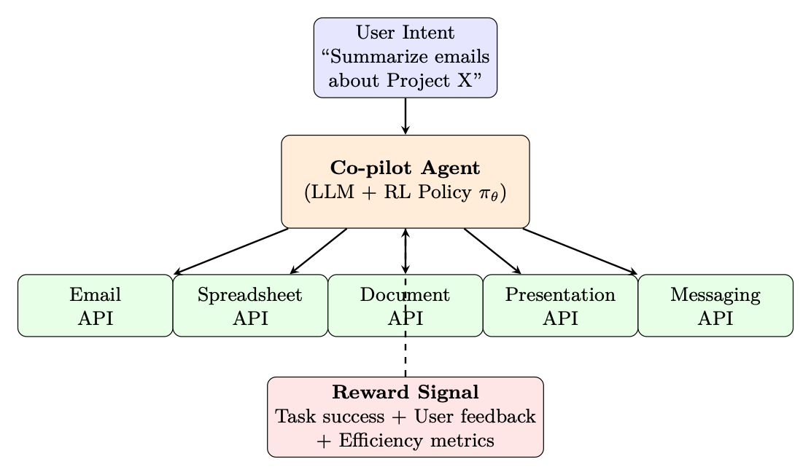

<!doctype html>
<html lang="zh-CN">
<head>
  <meta charset="utf-8" />
  <meta name="viewport" content="width=device-width, initial-scale=1" />
  <title>LLM 智能体训练 | 智能体式 AI 漫游指南</title>
  <meta name="description" content="把环境交互、轨迹缓冲区和奖励设计组织为智能体训练流水线。" />
  <meta property="og:title" content="LLM 智能体训练 | 智能体式 AI 漫游指南" />
  <meta property="og:description" content="把环境交互、轨迹缓冲区和奖励设计组织为智能体训练流水线。" />
  <meta property="og:type" content="article" />
  <link rel="canonical" href="https://conanxin.github.io/hitchhikers-guide-agentic-ai-zh/" />
  <link rel="stylesheet" href="../assets/css/main.css" />
  <link rel="stylesheet" href="../assets/css/article.css" />
  <link rel="stylesheet" href="../assets/css/responsive.css" />
</head>
<body class="article-page">
  <div class="reading-progress" id="reading-progress"></div>
  <header class="topbar">
    <a class="brand" href="../index.html"><span class="brand-mark">AST</span><span><strong>智能体式 AI 漫游指南</strong><small>结构化知识文档系统</small></span></a>
    <button class="nav-toggle" id="nav-toggle" aria-label="打开导航" aria-expanded="false"><span></span><span></span><span></span></button>
    <nav class="topnav" id="topnav"><a class="" href="../index.html">首页</a><a class="active" href="../chapters/index.html">章节</a><a class="" href="../glossary.html">术语表</a><a class="" href="../references.html">参考文献</a><a class="" href="../search.html">搜索</a><a class="" href="https://arxiv.org/pdf/2606.24937v1" target="_blank" rel="noopener">原 PDF</a></nav>
  </header>
  <main class="layout"><aside class="left-nav" id="left-nav"><div class="nav-section-title">语义目录</div><div class="nav-cluster"><strong>导读</strong><a class="chapter-link " href="../chapters/chapter-01.html"><span class="chapter-num">01</span><span>导读与前置说明</span></a><a class="chapter-link " href="../chapters/chapter-09.html"><span class="chapter-num">09</span><span>偏好优化变体</span></a></div><div class="nav-cluster"><strong>LLM 基础与系统</strong><a class="chapter-link " href="../chapters/chapter-02.html"><span class="chapter-num">02</span><span>LLM 架构和优化方法</span></a><a class="chapter-link " href="../chapters/chapter-03.html"><span class="chapter-num">03</span><span>LLM 的系统基础</span></a><a class="chapter-link " href="../chapters/chapter-12.html"><span class="chapter-num">12</span><span>大规模系统架构与基础设施</span></a></div><div class="nav-cluster"><strong>训练、强化学习与对齐</strong><a class="chapter-link " href="../chapters/chapter-04.html"><span class="chapter-num">04</span><span>强化学习简介</span></a><a class="chapter-link " href="../chapters/chapter-05.html"><span class="chapter-num">05</span><span>语言模型的强化学习基础</span></a><a class="chapter-link " href="../chapters/chapter-06.html"><span class="chapter-num">06</span><span>PPO：近端策略优化</span></a><a class="chapter-link " href="../chapters/chapter-07.html"><span class="chapter-num">07</span><span>DPO：直接偏好优化</span></a><a class="chapter-link " href="../chapters/chapter-08.html"><span class="chapter-num">08</span><span>GRPO：组相对策略优化</span></a><a class="chapter-link " href="../chapters/chapter-10.html"><span class="chapter-num">10</span><span>奖励模型训练</span></a><a class="chapter-link " href="../chapters/chapter-11.html"><span class="chapter-num">11</span><span>SFT 最佳实践与技术</span></a><a class="chapter-link " href="../chapters/chapter-14.html"><span class="chapter-num">14</span><span>大型推理模型的强化学习</span></a></div><div class="nav-cluster"><strong>Agentic AI 系统</strong><a class="chapter-link active" href="../chapters/chapter-13.html"><span class="chapter-num">13</span><span>LLM 智能体训练</span></a><a class="chapter-link " href="../chapters/chapter-16.html"><span class="chapter-num">16</span><span>智能体式 AI 简介</span></a><a class="chapter-link " href="../chapters/chapter-17.html"><span class="chapter-num">17</span><span>检索增强生成（RAG）</span></a><a class="chapter-link " href="../chapters/chapter-18.html"><span class="chapter-num">18</span><span>智能体记忆系统</span></a><a class="chapter-link " href="../chapters/chapter-19.html"><span class="chapter-num">19</span><span>智能体执行框架：上下文管理与编排</span></a><a class="chapter-link " href="../chapters/chapter-20.html"><span class="chapter-num">20</span><span>智能体设计模式</span></a><a class="chapter-link " href="../chapters/chapter-21.html"><span class="chapter-num">21</span><span>智能体环境与基准</span></a><a class="chapter-link " href="../chapters/chapter-22.html"><span class="chapter-num">22</span><span>模型上下文协议（MCP）</span></a><a class="chapter-link " href="../chapters/chapter-23.html"><span class="chapter-num">23</span><span>智能体技能</span></a><a class="chapter-link " href="../chapters/chapter-24.html"><span class="chapter-num">24</span><span>智能体间通信（A2A）</span></a><a class="chapter-link " href="../chapters/chapter-25.html"><span class="chapter-num">25</span><span>多智能体系统</span></a><a class="chapter-link " href="../chapters/chapter-26.html"><span class="chapter-num">26</span><span>智能体开发框架</span></a><a class="chapter-link " href="../chapters/chapter-27.html"><span class="chapter-num">27</span><span>智能体式 UI 框架</span></a></div><div class="nav-cluster"><strong>推理与评估</strong><a class="chapter-link " href="../chapters/chapter-15.html"><span class="chapter-num">15</span><span>LLM 评估</span></a></div><div class="nav-cluster"><strong>参考与总结</strong><a class="chapter-link " href="../chapters/chapter-28.html"><span class="chapter-num">28</span><span>测验题与详解</span></a><a class="chapter-link " href="../chapters/chapter-29.html"><span class="chapter-num">29</span><span>速查表</span></a><a class="chapter-link " href="../chapters/chapter-30.html"><span class="chapter-num">30</span><span>结论与未来方向</span></a></div></aside><section class="content-shell">
        <article class="article-card" data-ast-source="../assets/data/clean_chapter_tree.json">
          <header class="article-header">
            <p class="part-label">Agentic AI 系统</p>
            <h1>LLM 智能体训练</h1>
            <p>把环境交互、轨迹缓冲区和奖励设计组织为智能体训练流水线。</p>
          </header>
          <aside class="component key-concepts-panel"><span class="component-label">Key Concepts</span><div class="concept-chip"><strong>智能体</strong><span>Agent</span><p>能够感知状态、规划行动、调用工具并迭代完成任务的系统单元。</p></div><div class="concept-chip"><strong>标记 / token</strong><span>Token</span><p>语言模型处理文本的基本离散单位。</p></div><div class="concept-chip"><strong>注意力</strong><span>Attention</span><p>根据查询、键和值计算上下文加权表示的机制。</p></div><div class="concept-chip"><strong>强化学习</strong><span>Reinforcement Learning</span><p>通过奖励信号优化策略的学习范式。</p></div><div class="concept-chip"><strong>奖励模型</strong><span>Reward Model</span><p>把候选输出映射为偏好或质量分数的模型。</p></div><div class="concept-chip"><strong>策略</strong><span>Policy</span><p>在状态下选择动作或生成 token 的概率分布。</p></div><div class="concept-chip"><strong>轨迹</strong><span>Trajectory</span><p>智能体与环境交互形成的状态、动作、观察和奖励序列。</p></div><div class="concept-chip"><strong>缓冲区</strong><span>Buffer</span><p>保存经验、轨迹或中间数据以供训练和分析的结构。</p></div></aside>
          <div class="article-body"><section class="ast-section" id="chapter-13-s01"><div class="component section-overview"><div><span class="component-label">Section Overview</span><h2>动机：从聊天机器人到自主智能体</h2><p>本节聚焦“动机：从聊天机器人到自主智能体”的定义、机制与工程含义。</p></div><div class="mini-concepts"><div class="concept-chip"><strong>智能体</strong><span>Agent</span><p>能够感知状态、规划行动、调用工具并迭代完成任务的系统单元。</p></div><div class="concept-chip"><strong>标记 / token</strong><span>Token</span><p>语言模型处理文本的基本离散单位。</p></div><div class="concept-chip"><strong>强化学习</strong><span>Reinforcement Learning</span><p>通过奖励信号优化策略的学习范式。</p></div><div class="concept-chip"><strong>轨迹</strong><span>Trajectory</span><p>智能体与环境交互形成的状态、动作、观察和奖励序列。</p></div><div class="concept-chip"><strong>推理</strong><span>Inference</span><p>模型在部署或测试时生成输出的过程。</p></div></div></div><div class="section-blocks"><p class="content-block paragraph">LLM智能体训练</p><p class="content-block paragraph">现代LLM不仅被越来越多地用作对话助理，而且被用作自主的 通过多个步骤与外部工具、API、数据库和环境进行交互的智能体。这个 从单轮聊天机器人到多步智能体的转变带来了全新的强化学习挑战 这需要重新思考我们如何训练、评估和部署语言模型。</p><p class="content-block paragraph">(a) 传统聊天机器人</p><p class="content-block paragraph">(b) 自主智能体</p><p class="content-block paragraph">任务 行动</p><p class="content-block paragraph">用户 LLM 提示</p><p class="content-block paragraph">用户 LLM智能体 工具</p><p class="content-block paragraph">回应</p><p class="content-block paragraph">观测值</p><p class="content-block paragraph">单转，即时反馈</p><p class="content-block paragraph">执行</p><p class="content-block paragraph">奖励</p><p class="content-block paragraph">环境</p><p class="content-block paragraph">多步骤、稀疏的终端奖励</p><p class="content-block paragraph">图 12.1：从聊天机器人到自治智能体：传统的 LLM 聊天机器人一步操作 具有即时人类反馈的对话循环。自主智能体跨多种工具交互进行规划， 从现实世界的执行环境接收反馈，并优化稀疏的终端奖励（任务 成功/失败）。</p><p class="content-block paragraph">需要新的强化学习方法的主要区别：</p><p class="content-block paragraph">• 多步骤推理：智能体必须规划 10-100 多个工具调用，而不仅仅是生成单个工具 回应。</p><p class="content-block paragraph">• 外部环境反馈：奖励来自现实世界的执行（测试套件通过， 网页加载、代码编译）——不仅仅是人类偏好分数。</p><p class="content-block paragraph">• 结构化操作：操作不仅仅是token，而且是结构化输出（JSON 工具调用、 API 负载、代码块）。</p><p class="content-block paragraph">• 视野长远，回报稀少：成功/失败可能只有在经历了很多次之后才能确定。 中间步骤。</p><p class="content-block paragraph">为什么标准 RLHF 无法满足智能体商的要求</p><p class="content-block paragraph">标准 RLHF (PPO/DPO) 针对单圈质量进行了优化：给出提示，产生良好的结果 回应。但智能体必须：</p><p class="content-block paragraph">• 决定何时使用工具与内部推理</p><p class="content-block paragraph">• 从轨迹中间的错误中恢复（自我纠正）</p></div></section><section class="ast-section" id="chapter-13-s02"><div class="component section-overview"><div><span class="component-label">Section Overview</span><h2>LLM 智能体的轨迹缓冲区</h2><p>本节聚焦“LLM 智能体的轨迹缓冲区”的定义、机制与工程含义。</p></div><div class="mini-concepts"><div class="concept-chip"><strong>智能体</strong><span>Agent</span><p>能够感知状态、规划行动、调用工具并迭代完成任务的系统单元。</p></div><div class="concept-chip"><strong>强化学习</strong><span>Reinforcement Learning</span><p>通过奖励信号优化策略的学习范式。</p></div><div class="concept-chip"><strong>轨迹</strong><span>Trajectory</span><p>智能体与环境交互形成的状态、动作、观察和奖励序列。</p></div><div class="concept-chip"><strong>缓冲区</strong><span>Buffer</span><p>保存经验、轨迹或中间数据以供训练和分析的结构。</p></div><div class="concept-chip"><strong>推理</strong><span>Inference</span><p>模型在部署或测试时生成输出的过程。</p></div></div></div><div class="section-blocks"><p class="content-block paragraph">• 平衡探索（尝试新方法）和利用（使用已知的良好模式）</p><p class="content-block paragraph">• 处理部分可观察性（工具输出可能不完整或有噪音）</p><p class="content-block paragraph">这需要对整个轨迹而不是单个转弯进行推理的训练方法。</p><p class="content-block paragraph">在 LLM 智能体的背景下，传统的 RL 重播缓冲区经历了结构转变。 智能体缓冲区不是存储低维数值张量 - 通常称为轨迹 缓冲区、经验池或内存库 - 管理复杂的文本历史、工具 执行输出和明确的推理步骤。</p><p class="content-block paragraph">LLM 智能体缓冲区的数学结构</p><p class="content-block paragraph">在经典强化学习中，重放缓冲区存储平面元组 (s, a, r, s&#x27;)。对于LLM智能体来说，这可以扩展为 高维分词文本结构：</p><div class="component formula-component" data-fallback="latex"><div class="block-label">公式</div><pre class="formula"><code>et = (St, At, Rt, St+1) (12.1)</code></pre></div><p class="content-block paragraph">• St：完整的上下文状态——系统提示、用户目标、对话历史记录、 和当前环境变量（例如 HTML 源代码、目录结构、数据库 模式）。</p><p class="content-block paragraph">• At：智能体生成的输出，通常由思想链 (CoT) 推理组成 字符串后跟结构化工具调用：</p><div class="component formula-component" data-fallback="latex"><div class="block-label">公式</div><pre class="formula"><code>At = {textreasoning, jsontool_call} (12.2)</code></pre></div><p class="content-block paragraph">• Rt：来自外部执行环境的评估信号（单元测试通过、 编译器标志、API 响应代码）或由LLM法官系统验证。</p><p class="content-block paragraph">• St+1：更新的上下文窗口，直接附加工具输出文本或错误日志 进入对话历史记录。</p><p class="content-block paragraph">具体智能体轨迹：代码调试</p><div class="component code-component"><div class="block-label">text</div><pre><code>第 1 步：S1 =“修复 utils.py 中失败的测试”</code></pre></div><div class="component code-component"><div class="block-label">text</div><pre><code>A1 = “让我先读一下文件” + read_file(&quot;utils.py&quot;)</code></pre></div><div class="component code-component"><div class="block-label">text</div><pre><code>R1 = 0（中间步骤）</code></pre></div><div class="component code-component"><div class="block-label">text</div><pre><code>步骤2：S2 = [先前上下文+文件内容]</code></pre></div><div class="component code-component"><div class="block-label">text</div><pre><code>A2 = “bug 位于第 42 行，差一错误” + edit_file(&quot;utils.py&quot;, ...)</code></pre></div><div class="component code-component"><div class="block-label">text</div><pre><code>R2 = 0（中间步骤）</code></pre></div><div class="component code-component"><div class="block-label">text</div><pre><code>步骤3：S3 = [先前上下文+编辑确认]</code></pre></div><div class="component code-component"><div class="block-label">text</div><pre><code>A3 =“让我验证修复”+ run_tests()</code></pre></div><div class="component code-component"><div class="block-label">text</div><pre><code>R3 = +1.0（所有测试均通过——稀疏的最终奖励）</code></pre></div></div></section><section class="ast-section" id="chapter-13-s03"><div class="component section-overview"><div><span class="component-label">Section Overview</span><h2>运行范式</h2><p>本节聚焦“运行范式”的定义、机制与工程含义。</p></div><div class="mini-concepts"><div class="concept-chip"><strong>智能体</strong><span>Agent</span><p>能够感知状态、规划行动、调用工具并迭代完成任务的系统单元。</p></div><div class="concept-chip"><strong>强化学习</strong><span>Reinforcement Learning</span><p>通过奖励信号优化策略的学习范式。</p></div><div class="concept-chip"><strong>策略</strong><span>Policy</span><p>在状态下选择动作或生成 token 的概率分布。</p></div><div class="concept-chip"><strong>轨迹</strong><span>Trajectory</span><p>智能体与环境交互形成的状态、动作、观察和奖励序列。</p></div><div class="concept-chip"><strong>缓冲区</strong><span>Buffer</span><p>保存经验、轨迹或中间数据以供训练和分析的结构。</p></div></div></div><div class="section-blocks"><p class="content-block paragraph">运作范式</p><p class="content-block paragraph">LLM 智能体通过三种主要优化方法利用专门的轨迹缓冲区：</p><p class="content-block paragraph">一、自我修正和思想提炼</p><p class="content-block paragraph">该类别中的两种代表性方法是 STaR [223] 和 Reflexion [224]。当智能体时 如果多步执行跟踪失败，次优序列将保存到缓冲区。框架 随后对这一轨迹进行采样，并提示LLM对其过去进行明确的文本批评 性能：</p><div class="component code-component"><div class="block-label">text</div><pre><code>批评←LLM(失败，失败，R=0)</code></pre></div><p class="content-block paragraph">(12.3)</p><p class="content-block paragraph">一旦修正的轨迹获得积极的奖励，它就会转向最佳体验 用于通过微调（成功轨迹上的 SFT）或 RL 更新网络权重的池 （GRPO [14] 具有二元通过/失败奖励）。</p><p class="content-block paragraph">STAR：自学推理者</p><p class="content-block paragraph">1. 生成一批问题的推理轨迹</p><p class="content-block paragraph">2. 过滤：仅保留导致正确答案的痕迹</p><p class="content-block paragraph">3. 在成功的轨迹上微调模型（SFT）</p><p class="content-block paragraph">4. 重复：改进后的模型在下一次迭代中生成更好的轨迹</p><p class="content-block paragraph">每次迭代都会使用其自身的成功输出作为训练来引导模型的推理能力 数据。</p><p class="content-block paragraph">反思：言语强化学习</p><p class="content-block paragraph">1. Agent尝试执行任务，失败</p><p class="content-block paragraph">2. Agent 产生口头反映：“我失败了，因为我之前没有检查返回类型 调用API”</p><p class="content-block paragraph">3. 反射存储在情景内存缓冲区中</p><p class="content-block paragraph">4. 在下一次尝试时，将反思作为经验教训注入到提示中</p><p class="content-block paragraph">5. 无需更新体重——纯粹的情境学习，从自我批评中学习</p><p class="content-block paragraph">B. 离策略探索</p><p class="content-block paragraph">这种范例以 ReAct [127] 和相关工具使用框架为例，涉及广泛的 自主探索。在自主探索期间（网页导航、数据库查询、代码 生成），智能体记录数千条探索性执行路径。轨迹缓冲区充当 过滤器：</p><p class="content-block paragraph">• 成功过滤：仅保留实现目标的轨迹用于训练。</p><p class="content-block paragraph">• 效率排名：在成功的跟踪中，优先选择最短/最高效的工具使用路径。</p><p class="content-block paragraph">• 多样性抽样：维护一套多样化的解决方案策略以防止模式崩溃。</p><p class="content-block paragraph">优化算法（通常是 GRPO [14] 或过滤 SFT）专门计算损失 超越高效、成功的轨迹，同时放弃曲折的运行。</p></div></section><section class="ast-section" id="chapter-13-s04"><div class="component section-overview"><div><span class="component-label">Section Overview</span><h2>范式比较</h2><p>本节聚焦“范式比较”的定义、机制与工程含义。</p></div><div class="mini-concepts"><div class="concept-chip"><strong>智能体</strong><span>Agent</span><p>能够感知状态、规划行动、调用工具并迭代完成任务的系统单元。</p></div><div class="concept-chip"><strong>标记 / token</strong><span>Token</span><p>语言模型处理文本的基本离散单位。</p></div><div class="concept-chip"><strong>强化学习</strong><span>Reinforcement Learning</span><p>通过奖励信号优化策略的学习范式。</p></div><div class="concept-chip"><strong>策略</strong><span>Policy</span><p>在状态下选择动作或生成 token 的概率分布。</p></div><div class="concept-chip"><strong>轨迹</strong><span>Trajectory</span><p>智能体与环境交互形成的状态、动作、观察和奖励序列。</p></div></div></div><div class="section-blocks"><p class="content-block paragraph">C. 非参数情境学习（RAG over Experiences）</p><p class="content-block paragraph">轨迹缓冲区可以充当矢量数据库，而不是修改神经网络权重。 给定一个新的用户目标 Gnew，系统会检索最相关的过去经历：</p><p class="content-block paragraph">检索到的 = arg max e∈B sim(嵌入(Gnew), 嵌入(e)) (12.4)</p><p class="content-block paragraph">top-k 相似的成功历史运行被直接注入到提示上下文中作为 Few-shot 示威活动。这种方法：</p><p class="content-block paragraph">• 需要零训练——纯粹的检索增强生成</p><p class="content-block paragraph">• 如果缓冲区中存在类似的经历，则立即适应新任务</p><p class="content-block paragraph">• 根据缓冲区大小进行缩放（更多体验 = 更好的覆盖范围）</p><p class="content-block paragraph">• 补充参数学习（对罕见案例使用检索，对常见模式使用权重）</p><p class="content-block paragraph">表 12.1：传统 RL 缓冲区与 LLM 智能体缓冲区</p><p class="content-block paragraph">特点 传统 RL 缓冲器 LLM智能体缓冲区</p><p class="content-block paragraph">数据格式 连续向量/张量 分词文本、JSON、代码块、工具输出 数据量 大量（105–107 项） 小到中（103–105 条迹线） 主要目标 打破数据关联 提供推理演示 取样 随机制服/PER 语义检索/成功优先/多样性 状态尺寸 固定（例如，84×84 像素） 可变（每个状态 1K–128K token） 行动空间 离散/连续向量 结构化文本（推理+工具调用） 奖励来源 环境模拟器 外部执行/LLM判断/单元测试</p><p class="content-block paragraph">表 12.2：使用 RL 训练 LLM 智能体的关键方法。</p><p class="content-block paragraph">方法 类型 核心理念</p><p class="content-block paragraph">星[223] 迭代SFT 通过微调自己的成功进行引导推理 成功的痕迹 反思 [224] 上下文强化学习 口头自我批评储存为情景记忆； 没有体重更新 反应 [127] 提示 将推理（“思考”）和行动（“工具” 调用”）在一代人中 拉兹 [225] 树搜索 对动作序列进行蒙特卡罗树搜索； 反向传播奖励 特工Q [226] 离策略强化学习 使用 AI 生成的 DPO 处理智能体轨迹 偏好对 张开双手 [227] GRPO 与执行相关的组相关优化- 基于奖励（测试通过/失败） 航行者 [228] 技能库 成功存储和检索的代码片段 组合再利用 RLEF [229] 在线强化学习 来自执行反馈的强化学习——二元奖励 从代码/测试执行</p></div></section><section class="ast-section" id="chapter-13-s05"><div class="component section-overview"><div><span class="component-label">Section Overview</span><h2>Agentic RL 的主要技术</h2><p>本节聚焦“Agentic RL 的主要技术”的定义、机制与工程含义。</p></div><div class="mini-concepts"><div class="concept-chip"><strong>智能体</strong><span>Agent</span><p>能够感知状态、规划行动、调用工具并迭代完成任务的系统单元。</p></div><div class="concept-chip"><strong>标记 / token</strong><span>Token</span><p>语言模型处理文本的基本离散单位。</p></div><div class="concept-chip"><strong>强化学习</strong><span>Reinforcement Learning</span><p>通过奖励信号优化策略的学习范式。</p></div><div class="concept-chip"><strong>奖励模型</strong><span>Reward Model</span><p>把候选输出映射为偏好或质量分数的模型。</p></div><div class="concept-chip"><strong>策略</strong><span>Policy</span><p>在状态下选择动作或生成 token 的概率分布。</p></div></div></div><div class="section-blocks"><p class="content-block paragraph">C. 非参数情境学习（RAG over Experiences）</p><p class="content-block paragraph">轨迹缓冲区可以充当矢量数据库，而不是修改神经网络权重。 给定一个新的用户目标 Gnew，系统会检索最相关的过去经历：</p><p class="content-block paragraph">检索到的 = arg max e∈B sim(嵌入(Gnew), 嵌入(e)) (12.4)</p><p class="content-block paragraph">top-k 相似的成功历史运行被直接注入到提示上下文中作为 Few-shot 示威活动。这种方法：</p><p class="content-block paragraph">• 需要零训练——纯粹的检索增强生成</p><p class="content-block paragraph">• 如果缓冲区中存在类似的经历，则立即适应新任务</p><p class="content-block paragraph">• 根据缓冲区大小进行缩放（更多体验 = 更好的覆盖范围）</p><p class="content-block paragraph">• 补充参数学习（对罕见案例使用检索，对常见模式使用权重）</p><p class="content-block paragraph">表 12.1：传统 RL 缓冲区与 LLM 智能体缓冲区</p><p class="content-block paragraph">特点 传统 RL 缓冲器 LLM智能体缓冲区</p><p class="content-block paragraph">数据格式 连续向量/张量 分词文本、JSON、代码块、工具输出 数据量 大量（105–107 项） 小到中（103–105 条迹线） 主要目标 打破数据关联 提供推理演示 取样 随机制服/PER 语义检索/成功优先/多样性 状态尺寸 固定（例如，84×84 像素） 可变（每个状态 1K–128K token） 行动空间 离散/连续向量 结构化文本（推理+工具调用） 奖励来源 环境模拟器 外部执行/LLM判断/单元测试</p><p class="content-block paragraph">表 12.2：使用 RL 训练 LLM 智能体的关键方法。</p><p class="content-block paragraph">方法 类型 核心理念</p><p class="content-block paragraph">星[223] 迭代SFT 通过微调自己的成功进行引导推理 成功的痕迹 反思 [224] 上下文强化学习 口头自我批评储存为情景记忆； 没有体重更新 反应 [127] 提示 将推理（“思考”）和行动（“工具” 调用”）在一代人中 拉兹 [225] 树搜索 对动作序列进行蒙特卡罗树搜索； 反向传播奖励 特工Q [226] 离策略强化学习 使用 AI 生成的 DPO 处理智能体轨迹 偏好对 张开双手 [227] GRPO 与执行相关的组相关优化- 基于奖励（测试通过/失败） 航行者 [228] 技能库 成功存储和检索的代码片段 组合再利用 RLEF [229] 在线强化学习 来自执行反馈的强化学习——二元奖励 从代码/测试执行</p><p class="content-block paragraph">STAR：自学推理者（详细）</p><p class="content-block paragraph">STaR [223] 是一种迭代的自我改进方法，无需 外部奖励模型。核心见解：如果模型偶尔能够正确解决问题，那么它 可以从自己的成功经验中学习。 算法：</p><div class="component formula-component" data-fallback="latex"><div class="block-label">公式</div><pre class="formula"><code>1. Generate: For each problem xi in dataset D, sample a reasoning trace zi ∼πθ(·|xi) followed by an answer ˆyi.</code></pre></div><div class="component code-component"><div class="block-label">text</div><pre><code>2. Filter: Keep only traces where ˆyi = y∗
i (correct answer). Define success set Dpass = {(xi, zi, y∗
i ) :
ˆyi = y∗
i }.</code></pre></div><div class="component formula-component" data-fallback="latex"><div class="block-label">公式</div><pre class="formula"><code>3. Rationalization (key innovation): For problems where the model failed, generate a “ratio- nalization” — a trace conditioned on the correct answer: zrat i ∼πθ(·|xi, y∗ i ). This teaches the model to reason backward from solutions.</code></pre></div><div class="component code-component"><div class="block-label">text</div><pre><code>4. Fine-tune: Update θ via SFT on Dpass ∪Drationalized.</code></pre></div><div class="component code-component"><div class="block-label">text</div><pre><code>5. Iterate: Repeat from step 1 with the improved model.</code></pre></div><p class="content-block paragraph">log πθ(z, y|x) (12.5)</p><p class="content-block paragraph">θk+1 = arg min θ − X</p><p class="content-block paragraph">(x,z,y)∈D+ k</p><div class="component code-component"><div class="block-label">text</div><pre><code>Convergence dynamics: Each iteration k increases the model’s solve rate pk. If p0 = 0.3 (solves
30% of problems), after rationalization + SFT, p1 ≈0.5. Typically converges in 3–5 iterations to
p ≈0.7–0.9.</code></pre></div><p class="content-block paragraph">STaR 合理化提示</p><div class="component code-component"><div class="block-label">text</div><pre><code># Standard
generation (Step 1):
PROMPT = &quot;&quot;&quot;Solve the
following
problem
step by step.
Problem: A store has 45 apples. It sells 3/5 of them. How many
remain?
Let’s think
step by step:&quot;&quot;&quot;</code></pre></div><div class="component code-component"><div class="block-label">text</div><pre><code># Rationalization
prompt (Step 3 - conditioned on correct
answer):
PROMPT_RATIONALIZE = &quot;&quot;&quot;Solve the
following
problem
step by step.
The
correct
answer is 18.
Problem: A store has 45 apples. It sells 3/5 of them. How many
remain?
Let’s think
step by step to arrive at 18:&quot;&quot;&quot;</code></pre></div><div class="component code-component"><div class="block-label">text</div><pre><code># Agent
variant (code task with
error
conditioning):
PROMPT_AGENT_RATIONALIZE = &quot;&quot;&quot;The
following
code task
failed
with the error
below.
Generate a correct
solution
step by step.</code></pre></div><div class="component code-component"><div class="block-label">text</div><pre><code>Task: Implement
binary
search
that
handles
duplicates.
Previous
error: IndexError: list
index out of range (line 12)
Correct
behavior: Return
leftmost
index of target.</code></pre></div><div class="component code-component"><div class="block-label">text</div><pre><code>Let me fix this by reasoning
about the
boundary
conditions:&quot;&quot;&quot;</code></pre></div><p class="content-block paragraph">智能体的 STAR 变体</p><p class="content-block paragraph">• Quiet-STaR [230]：在每个生成标记之间插入“思考标记”。型号 无需明确的 CoT 提示即可学会隐式推理。训练目标：预测下一步 当包含思考标记时，标记会更好。</p><p class="content-block paragraph">• 代码智能体的STAR：用测试执行代替答案验证。 “正确”=全部 测试通过。合理化=根据错误消息生成新方法。</p><p class="content-block paragraph">• V-STaR [231]：添加在（z，y，正确/不正确）三元组上训练的验证器模型。验证者 提供流程级监督，过滤意外到达的不良推理痕迹 正确答案。</p><p class="content-block paragraph">反思：言语强化学习（详细）</p><p class="content-block paragraph">Reflexion [224] 引入了一个激进的范例：没有权重更新的强化学习。而不是渐变- 基于学习，智能体通过存储在情景中的自然语言自我批评来改进 记忆。 完整架构：</p><p class="content-block paragraph">1. Actor：在环境中执行操作的 LLM 智能体 π。</p><p class="content-block paragraph">2. 评估器：二进制信号（任务成功/失败）或标量启发式（例如，测试次数 案件已通过）。</p><p class="content-block paragraph">3.自反射生成器：给定失败轨迹τfail和环境反馈， 生成自然语言反射 rtext：</p><div class="component code-component"><div class="block-label">text</div><pre><code>rtext = LLMreflect(τfail, 反馈, 任务)</code></pre></div><p class="content-block paragraph">(12.6)</p><div class="component code-component"><div class="block-label">text</div><pre><code>4.情景记忆：滑动窗口缓冲区 M = [r1, r2, .。。 , rm] 过去的反思（通常</code></pre></div><p class="content-block paragraph">m ≤ 3 以适应上下文）。</p><p class="content-block paragraph">5. 重试循环：在下一次尝试时，反射将被注入到提示中：</p><p class="content-block paragraph">at+1 ∼π(· | 任务, M, 当前状态) (12.7)</p><p class="content-block paragraph">反思示例：“在我之前的尝试中，我在验证输入之前调用了搜索 API 格式，导致 400 错误。下次，我应该先验证 JSON 架构，然后再制作 API 调用。”</p><p class="content-block paragraph">反思：带有注入内存的智能体提示</p><div class="component code-component"><div class="block-label">text</div><pre><code># === ATTEMPT 2 PROMPT (after
first
failure) ===</code></pre></div><div class="component code-component"><div class="block-label">text</div><pre><code>SYSTEM = &quot;&quot;&quot;You are a coding
agent. You can run bash
commands
and edit
files.
Complete
the task
below. Learn
from your
previous
reflections.&quot;&quot;&quot;</code></pre></div><div class="component code-component"><div class="block-label">text</div><pre><code>USER = &quot;&quot;&quot;Task: Fix the
failing
test in auth_service .py</code></pre></div><div class="component code-component"><div class="block-label">text</div><pre><code>===
REFLECTIONS
FROM
PREVIOUS
ATTEMPTS
===
[Attempt 1 reflection ]: I tried to modify the
authenticate () function
directly
but forgot
that it depends on token_validator (). The test
failed
because
token_validator () was still
returning
the old format.
I should
trace the
dependency
chain
FIRST: check
what
authenticate ()
calls , then fix the root
cause ( token_validator ), not the
symptom.
=== END
REFLECTIONS
===</code></pre></div><div class="component code-component"><div class="block-label">text</div><pre><code>The
repository is in /workspace /. The
failing
test is:
test_auth.py:: test_expired_token_returns_401</code></pre></div><div class="component code-component"><div class="block-label">text</div><pre><code>Begin by reading
the
relevant files , then fix the issue.&quot;&quot;&quot;</code></pre></div><p class="content-block paragraph">优点和局限性：</p><p class="content-block paragraph">优势 局限性</p><p class="content-block paragraph">零梯度计算；与冻结的 API 一起使用 型号（GPT-4） 仅限于上下文窗口；无法积累infi- 有限的知识 快速迭代（每次重试的秒数与 RL 的小时数 训练） 没有对看不见的任务进行概括（记忆是任务- 具体） 可解释：人类可读的自我更正 依赖于模型现有的识别能力 错误 与任何基础智能体架构组合 当基础模型太弱而无法生成时会降级 有用的批评</p><p class="content-block paragraph">ReAct：推理+表演（详细）</p><p class="content-block paragraph">ReAct [127] 通过交错为使用工具的智能体建立了主导的提示范式 在单个生成流中使用环境操作进行显式推理步骤。</p><p class="content-block paragraph">ReAct 系统提示（典型）</p><div class="component code-component"><div class="block-label">text</div><pre><code>SYSTEM = &quot;&quot;&quot;You are a research
assistant
with
access to the
following
tools:
- search(query): Search the web for
information
- lookup(term): Look up a term on the
current
Wikipedia
page
- finish(answer): Submit
your
final
answer</code></pre></div><p class="content-block paragraph">通过交叉思考和行动步骤来解决用户的问题。格式：</p><div class="component code-component"><div class="block-label">text</div><pre><code>Thought: &lt;your
reasoning
about
what to do next &gt;
Action: &lt;tool_name &gt;( arguments)</code></pre></div><div class="component code-component"><div class="block-label">text</div><pre><code>You will
receive an Observation
after
each
Action. Use it to plan
your next step. Continue
until you can
provide a final
answer.</code></pre></div><div class="component code-component"><div class="block-label">text</div><pre><code>Rules:
- Always
think
before
acting
- Never
guess - verify
with
tools
- Use finish () only when you are
confident in your
answer&quot;&quot;&quot;</code></pre></div><div class="component code-component"><div class="block-label">text</div><pre><code>USER = &quot;Who was the
president of the US when the iPhone was
released?&quot;</code></pre></div><p class="content-block paragraph">生成格式： 反应跟踪格式</p><div class="component code-component"><div class="block-label">text</div><pre><code>Thought: I need to find when the iPhone was released , then
determine
who was
president at that time. Let me search for the
release
date.
Action: search(&quot;iPhone
original
release
date&quot;)
Observation: The
original
iPhone was
released on June 29, 2007.
Thought: The iPhone
came out June
2007. Now I need to find who was
the US president in June
2007.
Action: lookup(&quot;President of the United
States in 2007&quot;)
Observation: George W. Bush
served as the 43rd president
from
January 20, 2001 to January 20, 2009.
Thought: George W. Bush was
president
from 2001 -2009 , which
covers
June 2007 when the iPhone was
released. I have my answer.
Action: finish(&quot;George W. Bush was the US president
when the iPhone
was
released on June 29, 2007.&quot;)</code></pre></div><p class="content-block paragraph">正式定义：ReAct 轨迹为 τ = (t1, a1, o1, t2, a2, o2, ...) 其中：</p><p class="content-block paragraph">• ti：思想（内部推理，未执行）</p><p class="content-block paragraph">• ai：操作（工具调用，在环境中执行）</p><p class="content-block paragraph">• oi：观察（环境响应，附加到上下文）</p><p class="content-block paragraph">为什么有效：思想创造了一种“内心独白”，帮助模型在行动之前进行计划， reducing impulsive tool calls.显式推理轨迹也使得智能体的决策过程 auditable and debuggable.</p><div class="component code-component"><div class="block-label">text</div><pre><code>Training ReAct agents with RL:</code></pre></div><p class="content-block paragraph">• 行动层面的奖励：只有行动才能收到奖励信号（思想是辅助的）。</p><p class="content-block paragraph">• 思想质量：隐式优化——更好的思想→更好的行动→更高的奖励。</p><p class="content-block paragraph">• 格式强制：将格式惩罚纳入对格式错误行为的奖励中（缺失 JSON，幻觉工具）。</p><div class="component formula-component" data-fallback="latex"><div class="block-label">公式</div><pre class="formula"><code>• RL objective: r(τ) = rtask −λformat · format_violations −λlength · num_steps</code></pre></div><p class="content-block paragraph">LATS：语言智能体树搜索（详细）</p><p class="content-block paragraph">LATS [225] 将蒙特卡罗树搜索（MCTS）应用于 LLM 智能体动作选择、交易 推理计算以获得更好的轨迹。 算法（适用于LLM智能体）：</p><p class="content-block paragraph">1.选择：从根（初始状态）开始，使用UCB1遍历树：</p><p class="content-block paragraph">UCB(s, a) = Q(s, a) + c</p><div class="component code-component"><div class="block-label">text</div><pre><code>ln N(s)
N(s, a)
(12.8)</code></pre></div><div class="component code-component"><div class="block-label">text</div><pre><code>其中 ¯Q = 子树的平均奖励，N = 访问计数，c = 探索常数。</code></pre></div><div class="component formula-component" data-fallback="latex"><div class="block-label">公式</div><pre class="formula"><code>2. Expansion: At a leaf node, generate k candidate actions via LLM sampling (temperature &gt; 0): {a1, . . . , ak} ∼πθ(·|sleaf)</code></pre></div><p class="content-block paragraph">3. 模拟：对于每个候选者，在环境中执行操作并继续 快速推出策略（贪婪解码）直到最终状态或深度限制。</p><p class="content-block paragraph">4. 反向传播：将最终奖励向上传播到所有祖先节点，更新 ¯Q 和 N 个计数。</p><p class="content-block paragraph">5. 重复：针对固定计算预算（例如 50-200 次迭代）运行步骤 1-4。</p><p class="content-block paragraph">6. 动作选择：选择根中访问次数最多的子节点。</p><p class="content-block paragraph">LLM 特定的调整：</p><p class="content-block paragraph">• 价值函数：使用单独的LLM 调用来估计状态价值：“在0-1 的范围内，如何 这种状态有可能导致任务成功吗？”</p><p class="content-block paragraph">• 基于反射的剪枝：当分支失败时，生成反射并剪枝类似 分支机构。</p><p class="content-block paragraph">• 缓存：在每个节点存储LLM 输出，以避免回溯期间产生冗余。</p><p class="content-block paragraph">• 深度预算：将树深度限制为10-20 步（智能体很少需要更多）。</p><p class="content-block paragraph">性能：在 WebShop（网络导航）上，LATS 取得了 75% 的成功，而 ReAct 为 40%。开 HumanEval（代码），pass@1 通过树搜索从 68% 提高到 94%。成本：多 10–50 倍 每个任务的推理 FLOP 数。</p><p class="content-block paragraph">LATS提示：价值估算和节点扩展</p><div class="component code-component"><div class="block-label">text</div><pre><code># === VALUE
ESTIMATION
PROMPT (used
during
simulation) ===
VALUE_PROMPT = &quot;&quot;&quot;You are
evaluating an agent ’s progress on a task.</code></pre></div><div class="component code-component"><div class="block-label">text</div><pre><code>Task: Book a flight
from NYC to London for under \$500 , departing
Dec 15.</code></pre></div><div class="component code-component"><div class="block-label">text</div><pre><code>Current
state (after 3 actions):
- Searched
flights on Kayak: found 12 results
- Filtered by price &lt; \$500: 4 options
remain
- Clicked on British
Airways \$489
option: viewing
details
page</code></pre></div><div class="component code-component"><div class="block-label">text</div><pre><code>On a scale of 0.0 to 1.0, how likely is the agent to successfully
complete
the task from this
state? Consider:
- How close is the agent to the goal?
- Are there
remaining
obstacles (payment , seat
selection)?
- Has the agent
made any errors
that need
correction?</code></pre></div><div class="component code-component"><div class="block-label">text</div><pre><code>Score: &quot;&quot;&quot;
# Model
outputs e.g. &quot;0.75&quot;</code></pre></div><div class="component code-component"><div class="block-label">text</div><pre><code># === NODE
EXPANSION
PROMPT (generating
candidate
actions) ===
EXPAND_PROMPT = &quot;&quot;&quot;You are a web
navigation
agent. Given the
current
page state , propose 3 DIFFERENT
next
actions to try.</code></pre></div><div class="component code-component"><div class="block-label">text</div><pre><code>Current
page: British
Airways
booking - flight
details
Price: \$489 | Departure: Dec 15 8:30 am | Arrival: Dec 15 8:45 pm
[Button: Select] [Button: Back to results] [Link: Fare
rules]</code></pre></div><div class="component code-component"><div class="block-label">text</div><pre><code>Generate 3 diverse
candidate
actions (explore
different
strategies):
Action 1:&quot;&quot;&quot;
# Model
generates 3 options
for tree
expansion</code></pre></div><p class="content-block paragraph">AgentQ：关于智能体轨迹的 DPO（详细）</p><p class="content-block paragraph">AgentQ [226]通过以下方式将离线偏好学习（DPO）与在线智能体执行联系起来 根据轨迹结果自动生成偏好对。 流水线：</p><p class="content-block paragraph">1. Rollout：使用当前策略 πθ 为每个任务执行 N 条轨迹。</p><p class="content-block paragraph">2. 评估：使用基于执行的奖励对每个轨迹进行评分（二进制通过/失败或标量 公制）。</p><p class="content-block paragraph">3. 配对构建：对于每个任务，构建偏好对：</p><div class="component formula-component" data-fallback="latex"><div class="block-label">公式</div><pre class="formula"><code>(τw, τl) where r(τw) &gt; r(τl) (12.9)</code></pre></div><p class="content-block paragraph">在同一任务的轨迹中，选择奖励最高的轨迹；最低=拒绝。</p><p class="content-block paragraph">4. DPO 更新：在轨迹级对数概率上应用标准 DPO 损失：</p><p class="content-block paragraph"> (12.10)</p><div class="component formula-component" data-fallback="latex"><div class="block-label">公式</div><pre class="formula"><code>LAgentQ = −log σ  β  log πθ(τw)</code></pre></div><div class="component formula-component" data-fallback="latex"><div class="block-label">公式</div><pre class="formula"><code>πref(τw) −log πθ(τl)</code></pre></div><p class="content-block paragraph">πref(τl)</p><p class="content-block paragraph">5. 迭代：更新的 πθ 在下一轮中生成新的（更好的）轨迹。</p><p class="content-block paragraph">关键设计选择：</p><p class="content-block paragraph">• MCTS 引导的探索：在推出阶段使用 LATS 来生成多样化的高质量 轨迹（更好的训练数据）。</p><p class="content-block paragraph">• 步骤级DPO：不是比较完整的轨迹，而是在行动级别进行比较——给定 相同的前缀，下一步哪个操作会成功？</p><p class="content-block paragraph">• 自我博弈改进：每次 DPO 迭代都会产生更好的策略，从而生成更好的策略 产生更好的训练对的轨迹——一个良性循环。</p><p class="content-block paragraph">结果：在 WebShop 上，AgentQ 的成功率比之前的绝对提高了 50% →82% 3 次 DPO 迭代中的基本策略。</p><p class="content-block paragraph">Voyager：通过技能库进行终身学习（详细）</p><p class="content-block paragraph">Voyager [228] 引入了组合技能积累——智能体构建了一个不断增长的库 充当高级操作的可重用代码函数。 架构：</p><p class="content-block paragraph">1. 自动课程：LLM根据智能体的能力提出逐渐困难的任务 当前技能清单：“你现在可以开采木材和制作木板。下一个挑战：建造一个 工艺台。”</p><p class="content-block paragraph">2.技能生成：对于每个任务，智能体编写一个JavaScript函数（可执行代码） 这解决了它：</p><div class="component code-component"><div class="block-label">text</div><pre><code>Skilli = LLM(taski, 环境文档, 错误反馈)</code></pre></div><p class="content-block paragraph">(12.11)</p><p class="content-block paragraph">3.验证：在环境中执行代码。如果成功，添加到技能库。如果 否，通过错误反馈进行迭代（最多重试 5 次）。</p><p class="content-block paragraph">4.技能库（矢量DB）：每个经过验证的技能存储有：</p><p class="content-block paragraph">• 函数签名+文档字符串（用于检索）</p><p class="content-block paragraph">• 嵌入任务描述（用于语义搜索）</p><p class="content-block paragraph">• 依赖性（它称为其他技能）</p><p class="content-block paragraph">5.检索+组合：对于新任务，检索top-k最相关的技能并组合 他们：</p><div class="component code-component"><div class="block-label">text</div><pre><code>解决方案 = LLM(new_task, 检索(skill_library, k=5))</code></pre></div><p class="content-block paragraph">(12.12)</p><p class="content-block paragraph">关键见解：技能是组合性的——复杂的行为是由简单的组合产生的 已验证的功能。智能体永远不会忘记（库是持久的）并且单调改进（仅 添加经过验证的技能）。</p><p class="content-block paragraph">Voyager：课程和技能生成提示</p><div class="component code-component"><div class="block-label">text</div><pre><code># ===
AUTOMATIC
CURRICULUM
PROMPT ===
CURRICULUM_PROMPT = &quot;&quot;&quot;You are a curriculum
designer
for an AI agent.</code></pre></div><div class="component code-component"><div class="block-label">text</div><pre><code>Agent ’s current
skill
inventory:
- mine_wood (): Mines
nearby oak/birch
trees
- craft_planks (): Converts
logs to planks
- craft_sticks (): Converts
planks to sticks
- mine_stone (): Mines
stone
with
wooden
pickaxe</code></pre></div><div class="component code-component"><div class="block-label">text</div><pre><code>Propose
the next task that:
1. Builds on existing
skills (reachable
from
current
abilities)
2. Introduces
exactly
ONE new
concept or challenge
3. Is concrete
and
verifiable (clear
success
condition)</code></pre></div><div class="component code-component"><div class="block-label">text</div><pre><code>Next task
proposal:&quot;&quot;&quot;
# Output: &quot;Craft a furnace (requires 8 cobblestone
blocks
arranged
#
in a square). You
already
know
mine_stone ().&quot;</code></pre></div><div class="component code-component"><div class="block-label">text</div><pre><code># === SKILL
GENERATION
PROMPT ===
SKILL_GEN_PROMPT = &quot;&quot;&quot;Write a JavaScript
function to accomplish
this task
in Minecraft. Use the bot API (bot.dig , bot.craft , bot.equip , etc.)</code></pre></div><div class="component code-component"><div class="block-label">text</div><pre><code>Task: Smelt 5 iron
ingots
using a furnace.
Prerequisites
available: mine_stone (), craft_furnace (), mine_iron_ore ()</code></pre></div><p class="content-block paragraph">Error from previous attempt: &quot;Cannot smelt without fuel in furnace&quot;</p><div class="component code-component"><div class="block-label">text</div><pre><code>Write the
corrected
function:
async
function
smeltIronIngots (bot , count =5) {&quot;&quot;&quot;</code></pre></div><p class="content-block paragraph">RLEF：来自执行反馈的 RL（详细）</p><p class="content-block paragraph">RLEF [229] 将具有基于确定性执行奖励的在线强化学习应用于代码生成 智能体，建立最简单有效的智能体训练范例。 训练循环：</p><p class="content-block paragraph">1. 示例任务：使用训练集中的测试用例（x，测试）绘制编码问题。</p><p class="content-block paragraph">2.生成：智能体生成解决方案轨迹（读取文件、编写代码、运行测试） 使用当前策略 πθ。</p><p class="content-block paragraph">3. 执行：在沙盒环境中运行测试套件。奖励：</p><div class="component code-component"><div class="block-label">text</div><pre><code>r = # 测试通过</code></pre></div><div class="component code-component"><div class="block-label">text</div><pre><code># 总测试 ε[0, 1]</code></pre></div><p class="content-block paragraph">(12.13)</p><p class="content-block paragraph">4.更新：使用r作为奖励信号应用GRPO/PPO。</p><p class="content-block paragraph">5. 重复：使用新任务进行数千次迭代。</p><p class="content-block paragraph">为什么执行反馈对于强化学习来说是理想的选择：</p><p class="content-block paragraph">• 零噪音：与人类偏好不同，测试结果是确定性的。相同代码→相同 每次都有奖励。这消除了破坏强化学习训练稳定性的奖励噪声。</p><p class="content-block paragraph">• 无限规模：可以通过编程方式生成无限的任务（随机算法、API 集成测试、数据转换）。</p><p class="content-block paragraph">• 无奖励黑客：与学习奖励模型不同，测试套件不能被“愚弄”（假设 测试写得很好）。智能体必须切实解决问题。</p><div class="component code-component"><div class="block-label">text</div><pre><code>• 密集信号：部分测试通过（r = 0.6）提供比二元通过/失败更丰富的梯度。</code></pre></div><p class="content-block paragraph">OpenHands / SWE-Agent：软件工程 GRPO</p><p class="content-block paragraph">OpenHands [227] 和 SWE-Agent [232] 应用 GRPO 来训练自主解决问题的智能体 GitHub 问题 — 阅读代码、编写补丁和运行测试套件。 训练具体内容：</p><p class="content-block paragraph">• 环境：具有完整存储库、测试套件和开发人员工具（git、grep、lint）的Docker 容器。</p><p class="content-block paragraph">• 操作空间：Bash 命令、文件编辑、git 操作、测试执行。</p><p class="content-block paragraph">• 轨迹长度：解决 GitHub 问题时典型的 15-50 个操作。</p><p class="content-block paragraph">• 奖励：二进制——生成的补丁是否通过了问题的回归测试？</p><div class="component code-component"><div class="block-label">text</div><pre><code>• 组大小：N = 每个问题 8–16 个 GRPO 标准化轨迹。</code></pre></div><p class="content-block paragraph">• 课程：从标记为“好第一个问题”的问题开始，逐步发展到复杂的多文件 重构。</p><p class="content-block paragraph">最先进的结果：SWE-bench 已验证：RL 训练后解决率达到 30%→55%（对比 20%） 仅 SFT 基线）。</p><p class="content-block paragraph">OpenHands / SWE-Agent：系统提示符</p><div class="component code-component"><div class="block-label">text</div><pre><code>SYSTEM = &quot;&quot;&quot;You are an autonomous
software
engineer. You are given a
GitHub
issue to resolve. You have
access to the full
repository in
/workspace/ and can
execute
any bash
command.</code></pre></div><div class="component code-component"><div class="block-label">text</div><pre><code>AVAILABLE
COMMANDS:
- bash(command): Execute a shell
command
- edit(file , start_line , end_line , new_content): Edit a file
- search(pattern , path): Search for text in files
- submit (): Submit
your
patch
when done</code></pre></div><div class="component code-component"><div class="block-label">text</div><pre><code>WORKFLOW:
1. Read the issue
carefully
and
understand
the
expected
behavior
2. Explore
the
codebase to find
relevant
files
3. Reproduce
the bug (write/run a test that
fails)
4. Implement
the fix
5. Verify the fix (run the test
again - must pass)
6. Run the full test
suite to check for
regressions
7. Submit
when all tests
pass</code></pre></div><div class="component code-component"><div class="block-label">text</div><pre><code>RULES:
- Do NOT modify
test
files
unless the issue
explicitly
asks for it
- Prefer
minimal , targeted
changes
over
large
refactors
- Always
verify
your fix before
submitting&quot;&quot;&quot;</code></pre></div><div class="component code-component"><div class="block-label">text</div><pre><code>USER = &quot;&quot;&quot;GitHub
Issue
#4521: ‘DataFrame.merge ()‘ silently
drops
rows when ‘on ‘ column
contains
NaN values.</code></pre></div><div class="component code-component"><div class="block-label">text</div><pre><code>Expected: NaN keys
should be preserved (matched
with
other NaN rows)
Actual: Rows with NaN keys are
dropped
entirely</code></pre></div><div class="component code-component"><div class="block-label">text</div><pre><code>Repository: /workspace/pandas -dev/pandas/&quot;&quot;&quot;</code></pre></div><p class="content-block paragraph">未来：强化学习 + 智能体</p><p class="content-block paragraph">该领域正在趋向于一种模式：在线 RL 以及基于执行的奖励应用于 多步智能体轨迹。主要趋势：</p><p class="content-block paragraph">• GRPO/PPO 具有来自代码执行或工具成功的二进制通过/失败奖励</p><p class="content-block paragraph">• 课程学习：从简单的任务开始，逐步增加难度</p><p class="content-block paragraph">• 轨迹级优化（而非token级）——仅在多步骤结束时奖励 序列</p><p class="content-block paragraph">• 混合方法：对罕见任务使用检索（非参数）+ 对罕见任务使用强化学习（参数） 常见的</p><p class="content-block paragraph">• 缩放法则：更多的推理计算（搜索/重试）通常胜过更多的训练计算</p></div></section><section class="ast-section" id="chapter-13-s06"><div class="component section-overview"><div><span class="component-label">Section Overview</span><h2>用例：面向生产力副驾驶的 Agentic RL</h2><p>本节聚焦“用例：面向生产力副驾驶的 Agentic RL”的定义、机制与工程含义。</p></div><div class="mini-concepts"><div class="concept-chip"><strong>智能体</strong><span>Agent</span><p>能够感知状态、规划行动、调用工具并迭代完成任务的系统单元。</p></div><div class="concept-chip"><strong>标记 / token</strong><span>Token</span><p>语言模型处理文本的基本离散单位。</p></div><div class="concept-chip"><strong>强化学习</strong><span>Reinforcement Learning</span><p>通过奖励信号优化策略的学习范式。</p></div><div class="concept-chip"><strong>奖励模型</strong><span>Reward Model</span><p>把候选输出映射为偏好或质量分数的模型。</p></div><div class="concept-chip"><strong>策略</strong><span>Policy</span><p>在状态下选择动作或生成 token 的概率分布。</p></div></div></div><div class="section-blocks"><p class="content-block paragraph">使用案例：用于生产力副驾驶的智能体强化学习</p><p class="content-block paragraph">本节提供了应用智能体强化学习技术来训练基于LLM的完整蓝图 跨生产力应用程序套件（文档、电子表格、演示文稿、 电子邮件、消息、云存储）。</p><p class="content-block paragraph">架构概述</p><p class="content-block paragraph">图 12.2：生产力副驾驶架构：LLM 智能体（具有 RL 策略 πθ）接收用户意图并 与多个应用程序 API 交互。基于任务成功、用户反馈和效率的奖励信号 指标推动政策改进。</p><p class="content-block paragraph">生产力副驾驶的正式 MDP 定义</p><p class="content-block paragraph">生产力副驾驶环境被形式化为部分可观察马尔可夫决策 流程（POMDP）：</p><div class="component code-component"><div class="block-label">text</div><pre><code>M = ⟨S、A、T、R、Ω、O、γ⟩</code></pre></div><p class="content-block paragraph">(12.14)</p><p class="content-block paragraph">• S：状态空间 — 完整工作区环境状态：文档内容、电子邮件线程、 日历事件、文件系统、用户权限。不完全可观察：智能体只能看到 API 查询返回。</p><p class="content-block paragraph">• A：操作空间——结构化API 调用（见下文）。每个操作都是一个 JSON 对象，指定 目标应用程序、操作和参数。</p><p class="content-block paragraph">• T：转换函数 — 对于大多数操作来说是确定性的（写入文档→文档 已更新），但对于依赖于网络的操作（电子邮件发送时间、Teams 可用性）而言是随机的。</p><p class="content-block paragraph">• R：奖励功能——多成分（参见奖励设计部分）。</p><p class="content-block paragraph">• Ω：观察空间— API 响应、呈现的文档视图、错误消息。</p><p class="content-block paragraph">• O：观察函数 — 将状态映射到观察（API 响应格式化、截断 用于上下文窗口限制）。</p><p class="content-block paragraph">• γ = 0.99：折扣因子（长范围，典型10-50 步）。</p><figure class="component figure-component"><figcaption>图示：来自原文档的结构、表格或公式区域。</figcaption></figure><p class="content-block paragraph">具体示例：“总结上周的 Alpha 项目电子邮件并创建状态 幻灯片” 下面我们通过 POMDP 追踪完整的情节，将每个形式元素映射到具体的 实现。 用户请求：“总结上周 Alpha 项目电子邮件中的关键决定并添加 状态更新幻灯片到团队平台。”</p><p class="content-block paragraph">token 具体实现</p><p class="content-block paragraph">s0 真实情况：收件箱中有 47 封电子邮件提到“Project Alpha” 过去 7 天； SharePoint 上的 PowerPoint 文件“Q3_Status.pptx” 12 张幻灯片；用户有编辑权限。</p><p class="content-block paragraph">智能体观察：用户请求文本+系统提示。智能体有 还不知道电子邮件数量或甲板内容。 a1 Outlook.search({查询：“Project Alpha”，过去\_7\_天：true}) T (s0, a1) s1：系统检索 47 封匹配的电子邮件（确定性）。 奥1 API 返回前 10 个电子邮件主题 + 发件人 + 时间戳（trun- 由于上下文限制而被锁定 - O 正在执行）。 a2</p><div class="component code-component"><div class="block-label">text</div><pre><code>Outlook.read({ids: [top\_5\_thread\_ids]}) — 智能体选择</code></pre></div><p class="content-block paragraph">最相关的线程。 氧气 5 个电子邮件线程的完整正文（O 截断后约 8K 个标记）。 a3 内部推理动作：Agent综合关键决策：(1) 截止日期移至 11 月 15 日，(2) 批准预算，(3) 选择供应商。 a4 sharepoint.read({文件: &quot;Q3\_Status.pptx&quot;, 幻灯片: &quot;最后&quot;}) — 检查当前的最后一张幻灯片。 o4 最后一张幻灯片是“第二季度摘要”（幻灯片 12）。智能体决定添加幻灯片 13. a5 powerpoint.add\_slide({文件: &quot;Q3\_Status.pptx&quot;, 位置: 13, 布局： “标题和内容”，标题： “阿尔法计划——第 42 周状态”， 内容：“关键决定：1) 截止日期：11 月 15 日...”}) T（s4，a5） s5：幻灯片添加到甲板上（确定性）。 o5</p><div class="component code-component"><div class="block-label">text</div><pre><code>API 返回 {success: true, slip\_id: 13}。</code></pre></div><p class="content-block paragraph">R(s5) 奖励成分：+0.4 任务完成（创建幻灯片）、+0.3 信息质量（提取正确决策），+0.2 格式 合规性（使用正确的布局），+0.05 效率（5 个动作，无 错误），-0.0 安全损失。总计：0.95。 说明 POMDP 的关键方面：</p><div class="component code-component"><div class="block-label">text</div><pre><code>• 部分可观察性：在 t = 0 时，智能体不知道存在多少电子邮件或存在什么</code></pre></div><p class="content-block paragraph">该牌组包含 — 它必须查询才能发现状态。</p><p class="content-block paragraph">• 观察函数O：由于以下原因，API 返回截断结果（47 封电子邮件中的前 10 封） 上下文窗口限制。智能体看到真实状态的投影。</p><p class="content-block paragraph">• 随机转换：如果智能体尝试了teams.send_message()，则传递 时间是不确定的（收件人在线/离线）。</p><p class="content-block paragraph">• 多步骤规划：智能体必须跨 2 个应用程序链接 5 个操作，维护 电子邮件摘要和幻灯片内容之间的连贯性。</p><p class="content-block paragraph">• 折扣 γ = 0.99：对于 5 步，折扣最小 (0.995 = 0.95)，但对于 50 步 重要的任务——鼓励有效的解决方案。</p><p class="content-block paragraph">行动空间设计</p><p class="content-block paragraph">动作空间必须是结构化的、类型安全的且可组合的：</p><p class="content-block paragraph">生产力副驾驶行动模式</p><div class="component code-component"><div class="block-label">text</div><pre><code>&quot;action_type&quot;: &quot;api_call&quot;,
&quot;target_app&quot;: &quot;outlook | excel | word | powerpoint | teams | sharepoint&quot;,
&quot;operation&quot;: &quot;read | write | search | create | delete | modify&quot;,
&quot;parameters&quot;: {</code></pre></div><div class="component code-component"><div class="block-label">text</div><pre><code>&quot;endpoint&quot;: &quot;/me/messages?$filter=subject eq ’Project X’&quot;,
&quot;body&quot;: { ... },
// For write
operations
&quot;options&quot;: { &quot;top&quot;: 10 }
// Pagination , filtering
},
&quot;reasoning&quot;: &quot;I need to find
relevant
emails
before
summarizing&quot;
}</code></pre></div><p class="content-block paragraph">按应用的动作分类：</p><p class="content-block paragraph">应用程序 复杂性 关键行动</p><div class="component code-component"><div class="block-label">text</div><pre><code>Outlook
Medium
search,
read,
draft,
send,
move,
flag,
create_rule
Excel
High
read_range,
write_range,
insert_formula,
create_chart, pivot_table, run_macro
Word
Medium
read_paragraphs,
insert_text,
format_section,
find_replace,
insert_table
PowerPoint
Medium
add_slide,
insert_shape,
set_text,
set_layout, add_image, apply_theme
Teams
Low
send_message, create_meeting, search_chat,
add_members, post_to_channel
SharePoint
Medium
list_files,
upload,
download,
search,
create_page, set_permissions</code></pre></div><p class="content-block paragraph">国家代表</p><p class="content-block paragraph">智能体在每一步的观察（上下文窗口）：</p><div class="component code-component"><div class="block-label">text</div><pre><code>ot = [系统提示符；用户意图； tool_history1:t−1;当前结果]</code></pre></div><p class="content-block paragraph">(12.15)</p><p class="content-block paragraph">上下文预算管理（对于 128K 窗口至关重要）：</p><p class="content-block paragraph">• 系统提示：2K token（能力、安全规则、输出格式）</p><p class="content-block paragraph">• 用户意图+对话：4K token</p><p class="content-block paragraph">• 工具历史记录（滑动窗口）：最近8-12 个操作+观察结果，总结较旧的操作。 总计：最多 80K token</p><p class="content-block paragraph">• 当前观察：最多 32K 个token（大型电子表格、电子邮件线程）</p><p class="content-block paragraph">• 储备：10K token用于智能体推理+下一个动作生成</p><p class="content-block paragraph">状态压缩策略：</p><p class="content-block paragraph">• 选择性包含：仅包含与当前子目标相关的 API 响应（使用 辅助“相关性评分器”）。</p><p class="content-block paragraph">• 结构化摘要：将大型电子表格表示为架构 + 示例行，而不是 完整数据。</p><p class="content-block paragraph">• 分层存储：外部存储完整轨迹；将压缩摘要注入 上下文。</p><p class="content-block paragraph">奖励设计：多目标信号</p><p class="content-block paragraph">生产力副驾驶的奖励函数必须平衡多个目标：</p><div class="component formula-component" data-fallback="latex"><div class="block-label">公式</div><pre class="formula"><code>R(τ) = α1Rtask + α2Rquality + α3Refficiency + α4Rsafety + α5Ruser (12.16)</code></pre></div><p class="content-block paragraph">表 12.3：生产力副驾驶训练的奖励组成部分。</p><p class="content-block paragraph">组件 重量 信号类型 定义</p><p class="content-block paragraph">实时任务</p><p class="content-block paragraph">二进制/标量 任务成功完成（电子邮件 已发送、已创建文档、公式校正 直角） R质量</p><p class="content-block paragraph">LLM法官 输出质量：格式、清晰度、 内容的正确性 效率</p><p class="content-block paragraph">标量 步数过多的处罚：−0.02 × (num_steps -optimal_steps) 安全性</p><p class="content-block paragraph">二进制 没有不安全的行为（删除- 出确认，发送错误 收件人, 许可 违规行为）。</p><div class="component code-component"><div class="block-label">text</div><pre><code>如果有任何违规，Rsafety = 0。</code></pre></div><p class="content-block paragraph">鲁瑟</p><p class="content-block paragraph">稀疏 明确的用户反馈（竖起大拇指/- 下）可用时</p><p class="content-block paragraph">中间奖励（密集信号）：</p><p class="content-block paragraph">• 成功的 API 调用（200 响应）：+0.05</p><p class="content-block paragraph">• 正确的信息检索（由下游使用验证）：+0.10</p><p class="content-block paragraph">• 优雅地从错误中恢复（使用更正的参数重试）：+0.08</p><p class="content-block paragraph">• API 错误 (4xx/5xx)：–0.03</p><p class="content-block paragraph">• 重复相同的动作（循环检测）：–0.10</p><p class="content-block paragraph">• 当意图确实不明确时提出澄清问题：+0.05</p><p class="content-block paragraph">训练流水线：端到端</p><p class="content-block paragraph">生产力副驾驶 RL 训练流程</p><p class="content-block paragraph">第一阶段：监督微调（基础）</p><p class="content-block paragraph">1. 收集 50K–200K 人类展示的生产力任务轨迹（通过遥测、 注释器，或合成生成）。</p><p class="content-block paragraph">2. 使用 ReAct 格式对（指令、轨迹）对基础 LLM 进行 SFT。</p><p class="content-block paragraph">3. 验证：智能体应完成保留任务的 40-60%。</p><p class="content-block paragraph">第二阶段：模拟环境搭建</p><p class="content-block paragraph">1. 构建一个沙箱环境，其中包含模拟的 API 端点、合成邮箱、文档 评论和日历。</p><p class="content-block paragraph">2. 每个“用户”都有真实的个人资料：500 多封电子邮件、20 多份文档、日历事件、团队 渠道。</p><p class="content-block paragraph">3. 任务生成器：生成不同的指令验证对：“移动来自 Alice 的所有电子邮件 关于Q4预算到‘财务’文件夹”+验证功能。</p><p class="content-block paragraph">第三阶段：在线强化学习训练（GRPO）</p><p class="content-block paragraph">1. 样本任务批次（每次迭代 256 个任务）。</p><div class="component code-component"><div class="block-label">text</div><pre><code>2. 在沙盒环境中使用 πθ 为每个任务生成 N = 8 条轨迹。</code></pre></div><p class="content-block paragraph">3. 执行轨迹，从验证功能中收集奖励。</p><p class="content-block paragraph">4. 计算 GRPO 优势（每个任务跨 8 个轨迹的组标准化）。</p><p class="content-block paragraph">5. 使用修剪目标 + KL 惩罚与 SFT 模型更新策略。</p><p class="content-block paragraph">6. 每 500 次迭代：根据保留的基准测试进行评估（200 个任务，5 个难度级别）。</p><p class="content-block paragraph">第四阶段：人机交互优化</p><p class="content-block paragraph">1. 部署到内部dogfood用户（1000+用户，2周）。</p><p class="content-block paragraph">2. 收集赞成/反对信号+自由文本更正。</p><p class="content-block paragraph">3. 从 A/B 部署构建 DPO 首选项对（旧策略与新策略）。</p><p class="content-block paragraph">4. 根据人类偏好应用 1-2 轮 DPO 微调。</p><p class="content-block paragraph">仿真环境架构</p><p class="content-block paragraph">沙盒环境（简化）</p><div class="component code-component"><div class="block-label">text</div><pre><code>class
ProductivityEnvironment :
def
__init__(self , user_profile : UserProfile):
self.mailbox = SyntheticMailbox (user_profile .emails)
self.drive = SyntheticOneDrive (user_profile .files)
self.calendar = SyntheticCalendar (user_profile .events)
self.teams = SyntheticTeams (user_profile .channels)
self.step_count = 0
self.max_steps = 50</code></pre></div><div class="component code-component"><div class="block-label">text</div><pre><code>def step(self , action: dict) -&gt; Tuple[Observation , float , bool ]:</code></pre></div><div class="component code-component"><div class="block-label">text</div><pre><code>&quot;&quot;&quot;Execute
action , return (observation , reward , done).&quot;&quot;&quot;
self.step_count += 1</code></pre></div><div class="component code-component"><div class="block-label">text</div><pre><code># Route to appropriate
app
handler
handler = self.get_handler(action[&quot;target_app&quot;])
try:</code></pre></div><div class="component code-component"><div class="block-label">text</div><pre><code>result = handler.execute(action[&quot;operation&quot;], action[&quot;parameters&quot;])
obs = Observation(status =200 , body=result)
reward = 0.05
# Successful
API call
except
APIError as e:
obs = Observation(status=e.code , body=str(e))
reward =
-0.03</code></pre></div><div class="component code-component"><div class="block-label">text</div><pre><code># Check
terminal
condition
done = self.step_count
&gt;= self.max_steps
return obs , reward , done</code></pre></div><div class="component code-component"><div class="block-label">text</div><pre><code>def
evaluate(self , task: Task) -&gt; float:
&quot;&quot;&quot;Check if task
objective is achieved (terminal
reward).&quot;&quot;&quot;
return
task. verification_fn (self)
# 0.0 or 1.0</code></pre></div><p class="content-block paragraph">任务课程设计</p><p class="content-block paragraph">训练效果关键取决于任务难度进展：</p><p class="content-block paragraph">表 12.4：生产力副驾驶课程级别。</p><p class="content-block paragraph">级别 步骤 应用程序 示例任务</p><p class="content-block paragraph">L1：单步 1–2</p><p class="content-block paragraph">“阅读鲍勃发来的最新电子邮件”、“手机里有什么 A1？” L2：单一应用程序 3–5</p><p class="content-block paragraph">“起草一份对预算电子邮件的回复，总结 关键点” L3：多步 5–10</p><p class="content-block paragraph">“根据销售数据和格式创建数据透视表 表现最佳者以粗体显示” L4：跨应用 5–15 2-3 “找到第四季度的预算电子邮件，提取数字，然后输入 将它们保存在新的 Excel 工作表中” L5：复杂的工作流程 10–30 3+ “准备一份每周报告：从前任中提取指标 cel，总结电子邮件更新，创建 PowerPoint 幻灯片，在 Teams 中共享”</p><p class="content-block paragraph">课程策略：</p><p class="content-block paragraph">• 在早期训练中从 80% 的 L1–L2 任务开始，20% 的 L3 任务。</p><p class="content-block paragraph">• 当当前级别的成功率超过70%时，晋级到下一级别。</p><p class="content-block paragraph">• 始终保留 10-20% 的较简单任务，以防止灾难性遗忘。</p><p class="content-block paragraph">• 最终混合（收敛后）：10% L1、15% L2、25% L3、30% L4、20% L5。</p><p class="content-block paragraph">安全和护栏</p><p class="content-block paragraph">生产力副驾驶安全框架</p><p class="content-block paragraph">硬约束（立即拒绝操作，奖励 = –1.0）：</p><p class="content-block paragraph">• 无需用户确认即可向外部收件人发送电子邮件/消息</p><p class="content-block paragraph">• 永久删除文件/电子邮件（仅允许软删除）</p><p class="content-block paragraph">• 修改共享资源的权限</p><p class="content-block paragraph">• 超出授予权限访问其他用户的邮箱或文件</p><p class="content-block paragraph">• 批量对超过 100 个项目执行操作（防止批量删除/移动事故）</p><p class="content-block paragraph">软约束（奖励中的惩罚，智能体应该学会避免）：</p><p class="content-block paragraph">• 发送草稿而不向用户显示预览：–0.2</p><p class="content-block paragraph">• 在未事先说明意图的情况下进行不可逆转的更改：–0.15</p><p class="content-block paragraph">• 访问敏感标签（机密、律师-客户）：–0.3</p><p class="content-block paragraph">• 在没有明确委托的情况下使用“代表发送”：–0.25</p><p class="content-block paragraph">确认协议：对于任何被归类为“高影响”的操作（发送、删除、外部共享）， 智能体必须：</p><p class="content-block paragraph">1. 用自然语言陈述预期的动作</p><p class="content-block paragraph">2. 显示将要发送/修改的内容的预览</p><p class="content-block paragraph">3.执行前等待明确的用户确认</p><p class="content-block paragraph">这是在环境级别强制执行的（沙箱拒绝未经确认的高影响力操作） 以及奖励函数（跳过确认的惩罚）。</p><p class="content-block paragraph">多应用程序工作流程中的信用分配</p><p class="content-block paragraph">关键挑战：在 20 个步骤的跨应用工作流程中，哪些步骤导致成功或失败？ 方法：分层奖励分解</p><p class="content-block paragraph">1. 子目标检测：将用户的指令分解为可验证的子目标：</p><p class="content-block paragraph">•“查找第四季度预算电子邮件”→子目标1（已验证：检索到相关电子邮件）</p><p class="content-block paragraph">•“提取数字”→子目标2（已验证：解析出正确的值）</p><p class="content-block paragraph">•“创建Excel工作表”→子目标3（已验证：工作表存在且数据正确）</p><p class="content-block paragraph">2.子目标奖励：在每个子目标完成时分配中间奖励（每个r = +0.2）。</p><p class="content-block paragraph">3. 轨迹切片：如果最终任务失败，识别哪个子目标首先失败。应用负数 仅奖励该子目标范围内的行动。</p><p class="content-block paragraph">4. 反事实估计：“如果这个具体行动是这样的话，任务会成功吗？” 不同吗？ — 使用价值函数进行估计。</p><p class="content-block paragraph">(12.17)</p><p class="content-block paragraph">+ γT−tR 末端 | {z } 最终奖励折扣 + r中级(t) | {z } 每步 API 成功/失败</p><p class="content-block paragraph">R步(t) = R子目标(t) | {z } 当前子目标成功了吗？</p><p class="content-block paragraph">扩展和基础设施</p><p class="content-block paragraph">计算要求（70B参数模型的估计）：</p><p class="content-block paragraph">组件 资源 注释</p><p class="content-block paragraph">政策模型（70B）</p><div class="component code-component"><div class="block-label">text</div><pre><code>8× A100 80GB (TP=8)</code></pre></div><p class="content-block paragraph">BF16，生成轨迹 参考型号（70B）</p><div class="component code-component"><div class="block-label">text</div><pre><code>8× A100 80GB (TP=8)</code></pre></div><p class="content-block paragraph">冻结，用于 KL 计算 环境工作者 128 个 CPU 工作线程 每个运行沙箱实例 奖励模型/评委 4× A100（如果是LLM评委） 如果使用基于执行的奖励则为零 训练（GRPO 更新） 16× A100（FSDP） 轨迹批次上的梯度累积 总计</p><p class="content-block paragraph">A100 GPU +</p><p class="content-block paragraph">中央处理器 完整训练运行需要 5,000 个 GPU 小时</p><p class="content-block paragraph">吞吐量优化：</p><p class="content-block paragraph">• 异步推出：将轨迹生成与梯度更新分离。持续生成 在前一批训练时。</p><p class="content-block paragraph">• 批处理环境：并行运行 128 个沙箱环境，每个环境处理不同的数据 任务。</p><div class="component code-component"><div class="block-label">text</div><pre><code>• KV 缓存共享：对于每个任务 N = 8 个轨迹，它们共享相同的提示前缀 —</code></pre></div><p class="content-block paragraph">使用前缀缓存来避免冗余计算。</p><p class="content-block paragraph">• 选择性反向传播：仅计算动作标记上的梯度（而不是观察/系统 提示）。将反向传递 FLOPS 减少 40-60%。</p><p class="content-block paragraph">评估框架</p><p class="content-block paragraph">基准测试套件（建议）：</p><p class="content-block paragraph">• ProdBench-Easy（200 项任务）：单个应用程序，1-3 个步骤。基线的建立。</p><p class="content-block paragraph">• ProdBench-Hard（200 项任务）：跨应用程序工作流程，10-30 个步骤。端到端能力。</p><p class="content-block paragraph">表 12.5：生产力副驾驶评估维度。</p><p class="content-block paragraph">公制 目标 测量</p><p class="content-block paragraph">任务完成率 &gt; 85% (L1–L3), &gt; 60% (L4– L5) 沙盒中的自动验证</p><p class="content-block paragraph">安全违规率 &lt; 0.1% 每 1000 次硬约束违规次数 任务 平均完成步骤 1.5×最佳以内 与已知最短成功轨迹相比 用户满意度（dogfood） &gt; 4.2/5.0 内部用户的任务后调查 跨应用成功 &gt; 55% (L4–L5) 需要 2 个以上应用程序的任务 回收率 &gt; 70% 智能体重试成功的 API 调用失败百分比 - 完全 延迟（第一次操作的时间） &lt; 3 秒 模型推理+行动规划时间</p><p class="content-block paragraph">• ProdBench-Safety（100 项任务）：尝试触发不安全操作的对抗性提示。 违规率必须保持 &lt; 0.1%。</p><p class="content-block paragraph">• ProdBench-Robustness（100 个任务）：指令不明确、注入 API 错误的任务， 缺少权限。测试优雅的降级。</p><p class="content-block paragraph">生产部署的经验教训</p><p class="content-block paragraph">生产力的实用见解 Agentic RL</p><p class="content-block paragraph">1. SFT 质量是底线：RL 只能改进 SFT 提供的内容。如果 SFT 模型无法格式化有效的 Graph API 调用，RL 不会发现它。第一阶段投入巨资 数据质量。</p><p class="content-block paragraph">2. 奖励黑客攻击是不可避免的：智能体会找到捷径。常见示例：</p><p class="content-block paragraph">• 创建一个空的 Excel 文件来“完成”电子表格任务（通过存在性检查）</p><p class="content-block paragraph">• 回复“完成”但没有实际执行操作</p><p class="content-block paragraph">• 利用不明确的验证函数</p><p class="content-block paragraph">缓解措施：多级验证（格式+内容+语义正确性）。</p><p class="content-block paragraph">3. API 速率限制很重要：在生产中，工作区 API 会受到限制（429 个响应）。 使用实际的速率限制进行训练，以避免垃圾邮件并行请求的策略。</p><p class="content-block paragraph">4.上下文窗口是瓶颈：具有丰富API响应的20步轨迹 轻松消耗80K+token。技术：观察总结、选择性病史、 分层上下文管理。</p><p class="content-block paragraph">5. 用户意图常常不明确：“清理我的收件箱”对于不同的人来说意味着不同的事情 用户。训练智能体在不确定性很高时提出澄清问题（奖励 适当的澄清，对过度澄清进行处罚）。</p><p class="content-block paragraph">6. 从简单开始，逐渐扩展：从仅限 Outlook 的任务开始（数量最多、数量最多） 遥测数据），然后扩展到 Excel，然后跨应用程序。每个应用程序都有独特的故障模式。</p><p class="content-block paragraph">完整的训练食谱</p></div></section><section class="ast-section" id="chapter-13-s07"><div class="component section-overview"><div><span class="component-label">Section Overview</span><h2>用例：从零构建研究智能体</h2><p>本节聚焦“用例：从零构建研究智能体”的定义、机制与工程含义。</p></div><div class="mini-concepts"><div class="concept-chip"><strong>智能体</strong><span>Agent</span><p>能够感知状态、规划行动、调用工具并迭代完成任务的系统单元。</p></div><div class="concept-chip"><strong>标记 / token</strong><span>Token</span><p>语言模型处理文本的基本离散单位。</p></div><div class="concept-chip"><strong>注意力</strong><span>Attention</span><p>根据查询、键和值计算上下文加权表示的机制。</p></div><div class="concept-chip"><strong>强化学习</strong><span>Reinforcement Learning</span><p>通过奖励信号优化策略的学习范式。</p></div><div class="concept-chip"><strong>策略</strong><span>Policy</span><p>在状态下选择动作或生成 token 的概率分布。</p></div></div></div><div class="section-blocks"><p class="content-block paragraph">表 12.6：生产力副驾驶 RL 训练的推荐超参数。</p><p class="content-block paragraph">参数 价值 基本原理</p><p class="content-block paragraph">基础型号 70B 美洲驼/米斯特拉尔 足够的能力进行复杂的多步骤重新 索尼 强化学习算法 GRPO 不需要批评家；内存效率高，适合长时间传输 猜测 团体规模N</p><p class="content-block paragraph">方差减少和计算之间的平衡 成本 剪辑 ϵ</p><p class="content-block paragraph">由于长轨迹，比标准（0.2）更紧 保守党敏感性 KL系数β</p><p class="content-block paragraph">对SFT政策的适度约束 学习率 5×10−7 保守；智能体任务对大的任务很敏感 更新 批量大小 256 个任务 × 8 条轨迹 = 2048 大批量稳定的 GRPO 标准化 最大轨迹长度 50步 涵盖 95% 的生产力任务 上下文窗口 128K token 长时间的多应用工作流程所需 训练迭代 3000–5000 监控评估指标；安全降级早停 日期 课程热身 500 次迭代（仅限 L1–L2） 在执行复杂任务之前建立基本的 API 使用方法</p><p class="content-block paragraph">用例：从头开始构建研究智能体</p><p class="content-block paragraph">这个用例演示了如何构建一个完全自主的研究智能体——一个可以 提出假设、搜索文献、分析数据、编写代码、运行实验并生成结果 最终报告——使用本文讨论的技术。</p><p class="content-block paragraph">问题定义</p><p class="content-block paragraph">研究智能体要求</p><p class="content-block paragraph">输入：一个研究问题（例如，“学习率预热持续时间对 GRPO 有何影响？ 7B 模型的融合？”） 输出：一份完整的研究报告，包括方法、实验、结果和结论。 所需能力：</p><p class="content-block paragraph">1.文献检索：查询arXiv、Semantic Scholar，查找相关论文</p><p class="content-block paragraph">2. 假设生成：根据背景知识制定可检验的假设</p><p class="content-block paragraph">3. 实验设计：编写具有适当控制的训练脚本</p><p class="content-block paragraph">4. 代码执行：运行实验，收集指标</p><p class="content-block paragraph">5. 数据分析：解析日志、计算统计数据、生成图表</p><p class="content-block paragraph">6. 科学写作：将研究结果综合成连贯的报告</p><p class="content-block paragraph">7.自我修正：检测失败的实验并使用修改的参数重试</p><p class="content-block paragraph">MDP配方</p><p class="content-block paragraph">研究智能体MDP</p><p class="content-block paragraph">• 陈述st：系统提示+研究问题+行动/观察的完整历史（工具 输出、代码结果、搜索结果）。上下文窗口：128K 个token。</p><p class="content-block paragraph">• 操作处：来自操作空间的结构化工具调用（见下文）+ 推理跟踪(CoT)。</p><p class="content-block paragraph">• 转换T(st+1|st, at)：确定性— 将操作+工具输出附加到上下文。</p><p class="content-block paragraph">• 奖励R：基于报告质量的稀疏终端奖励（参见下面的奖励设计）。</p><p class="content-block paragraph">• 地平线：20-100 个步骤（典型的研究轨迹）。</p><p class="content-block paragraph">• 折扣γ = 1.0（间歇性的；有限任务没有折扣）。</p><p class="content-block paragraph">行动空间</p><p class="content-block paragraph">表 12.7：研究智能体工具/行动空间。</p><p class="content-block paragraph">工具 类别 描述</p><p class="content-block paragraph">搜索论文 文学 查询语义学者/arXiv。返回标题， 摘要、引文。 读论文 文学 获取全文或论文的特定部分。 写代码 实验 将 Python/训练脚本写入工作区。 执行代码 实验 在沙盒环境中运行脚本。重新 变成标准输出/标准错误。 读文件 分析 读取日志、CSV 或中间结果。 绘图数据 分析 生成 matplotlib/seaborn 可视化。 计算统计数据 分析 运行统计检验（t 检验、置信区间）。 写报告 输出 写出最终研究报告的各个部分（La- TeX/Markdown）。 认为</p><p class="content-block paragraph">内部推理步骤（无外部工具调用）。 提交 终端 提交最终报告。结束这一集。</p><p class="content-block paragraph">架构：模型和基础设施选择</p><p class="content-block paragraph">架构决策——应用纸质概念</p><div class="component code-component"><div class="block-label">text</div><pre><code>• 基础型号：Qwen-2.5 72B（强推理+代码）。 QLoRA 微调（r = 32，所有</code></pre></div><p class="content-block paragraph">线性层）——参见 LoRA 部分。</p><div class="component code-component"><div class="block-label">text</div><pre><code>• 推理：TP=4 的 vLLM，启用前缀缓存（跨部署共享系统提示）</code></pre></div><p class="content-block paragraph">— 参见 vLLM 部分。</p><div class="component code-component"><div class="block-label">text</div><pre><code>• 训练：GRPO 每个研究问题有 N = 4 个轨迹 — 无需价值模型</code></pre></div><p class="content-block paragraph">（参见 GRPO 部分）。</p><p class="content-block paragraph">• 硬件：8×H100 节点。 QLoRA 适配器可容纳 48 GB； vLLM 生成使用剩余的 容量。</p><p class="content-block paragraph">• 上下文管理：带有FlashAttention 的128K 上下文（请参阅FlashAttention 部分）。 超出上下文的轨迹的滑动窗口摘要。</p><p class="content-block paragraph">• 推测性解码：Eagle 在漫长的研究轨迹中致力于快速生成 （参见推测解码部分）。</p><p class="content-block paragraph">奖励设计</p><p class="content-block paragraph">多成分研究奖励</p><p class="content-block paragraph">当智能体调用提交时计算终端奖励：</p><div class="component code-component"><div class="block-label">text</div><pre><code>R = w1R质量 + w2R正确性 + w3R新颖性 + w4效率 + w5R格式</code></pre></div><p class="content-block paragraph">组件 重量 如何测量</p><p class="content-block paragraph">R质量</p><p class="content-block paragraph">LLM作为法官（GPT-4 评分报告 1-10 明确） 性、深度、严谨性） 正确性</p><p class="content-block paragraph">代码执行没有错误+结果被重新 可生产的 新颖性</p><p class="content-block paragraph">LLM法官：该报告是否提供了以下见解： 除了总结论文之外？ 效率</p><p class="content-block paragraph">减少步骤的奖励： 雷夫 = 最大值(0, 1 − 步数/100) 格式</p><p class="content-block paragraph">报告包含所有必需的部分（简介、方法、 结果、结论） 中间整形：每次成功执行代码+0.1；每个运行时错误为−0.05 （鼓励首先编写正确的代码）。</p><p class="content-block paragraph">奖励黑客风险</p><p class="content-block paragraph">• 虚假结果：智能体伪造实验输出。修复：验证代码实际运行的 根据报告的数字检查执行日志。</p><p class="content-block paragraph">• 浅层报告：智能体逐字复制纸质摘要。修复：新奇奖励+抄袭 检测。</p><p class="content-block paragraph">• 长度游戏：长报告得分更高。修复：效率奖励+长度惩罚。</p><p class="content-block paragraph">• 简单的问题：智能体避免了困难的研究问题。修复：课程有困难 水平。</p><p class="content-block paragraph">训练渠道</p><p class="content-block paragraph">1. 第 1 阶段 — SFT 预热（500 个步骤）：</p><p class="content-block paragraph">• 收集 200 个专家研究轨迹（使用工具的人类研究人员） • 通过仅完成屏蔽（屏蔽工具输出）对成功轨迹进行 SFT • 这教授智能体工具使用语法和基础研究工作流程</p><p class="content-block paragraph">2. 第 2 阶段 — GRPO 训练（3000 步）：</p><p class="content-block paragraph">• 提示池：跨 10 个领域（ML、NLP、CV、系统等）的 500 个研究问题</p><div class="component code-component"><div class="block-label">text</div><pre><code>• 每个问题：生成 N = 4 个完整的研究轨迹</code></pre></div><p class="content-block paragraph">• 通过多成分奖励对每个轨迹进行评分</p><div class="component code-component"><div class="block-label">text</div><pre><code>• GRPO 优势：^Ai = (Ri −µG)/σG</code></pre></div><p class="content-block paragraph">• 使用剪辑目标更新策略（剪辑 ϵ = 0.2，KL β = 0.05） • 课程：从简单的“总结 X 的发现”任务开始，进展到“设计和 在 X 上运行实验”</p><p class="content-block paragraph">3. 第 3 阶段 — 拒绝采样微调（200 个步骤）：</p><p class="content-block paragraph">• 每个难题生成 16 个轨迹，通过奖励保持前 2 名 • 在这些高质量轨迹上进行 SFT • 稳定最艰巨的研究任务的表现</p><p class="content-block paragraph">示例轨迹：完整 MDP 跟踪</p><p class="content-block paragraph">为了说明所有 MDP 组件在实践中如何协同工作，我们追踪了一项完整的研究 从问题到提交的整个过程，用其正式的 MDP 元素注释每个步骤。</p><p class="content-block paragraph">研究智能体轨迹 — 完整 MDP 跟踪</p><div class="component code-component"><div class="block-label">text</div><pre><code>研究问题：“将 GRPO 组规模增加到 N = 16 以上是否可以改善数学推理</code></pre></div><p class="content-block paragraph">表现？” 下面是一个完整的轨迹，每个步骤都有明确的 MDP token：状态 st、动作 at、 转变 T、观察 ot 和累积奖励。</p><p class="content-block paragraph">t 元素 描述</p><p class="content-block paragraph">a0 想：“我需要关于 GRPO 群体规模消融的论文，然后是受控的 实验。”</p><div class="component code-component"><div class="block-label">text</div><pre><code>内部推理（无工具输出）。塑造奖励：r0 = 0。</code></pre></div><p class="content-block paragraph">s1 s0 ⊕(a0, o0) — 上下文现在包括推理计划。 a1</p><div class="component code-component"><div class="block-label">text</div><pre><code>search_papers(query=&quot;GRPO 组大小消融数学&quot;)</code></pre></div><p class="content-block paragraph">奥1</p><div class="component code-component"><div class="block-label">text</div><pre><code>返回 5 篇论文：[DAPO、DeepSeek-Math、Dr. GRPO、...]。 r1 = 0。</code></pre></div><p class="content-block paragraph">s2 s1 ⊕(a1, o1) — 上下文中的搜索结果。 a2</p><div class="component code-component"><div class="block-label">text</div><pre><code>read_paper(id=&quot;DAPO&quot;,sections=[&quot;实验&quot;,&quot;消融&quot;])</code></pre></div><p class="content-block paragraph">氧气</p><div class="component code-component"><div class="block-label">text</div><pre><code>主要发现：“在代码任务中，N = 16 以上的收益递减；数学</code></pre></div><div class="component code-component"><div class="block-label">text</div><pre><code>未经测试。” r2 = 0。</code></pre></div><p class="content-block paragraph">s3 s2 ⊕(a2, o2) — 确定的文献差距。 a3 想：“DAPO 仅测试了代码。我将在 GSM8K 上测试 N ∈{4, 8, 16, 32, 64} 与 Llama-3 8B。控制：相同的总训练token。” o3</p><div class="component code-component"><div class="block-label">text</div><pre><code>假设成立。 r3 = 0。</code></pre></div><p class="content-block paragraph">s4 s3 ⊕(a3, o3) — 上下文中的实验计划。 a4 write_code(&quot;train_grpo_gsm8k.py&quot;) — 85 行脚本，带有 argparse for group_size、适当的种子、GSM8K 测试拆分的评估。 o4</p><div class="component code-component"><div class="block-label">text</div><pre><code>文件写入成功。 r4 = 0。</code></pre></div><p class="content-block paragraph">s5 s4 ⊕(a4, o4) — 工作区中可用的代码。 a5 execute_code(“python train_grpo_gsm8k.py –N 4 –seed 42”) o5 准确度：</p><div class="component code-component"><div class="block-label">text</div><pre><code>67.2%（置信区间：65.1–69.3）。 r5 = +0.1（成功执行）。</code></pre></div><p class="content-block paragraph">6-8 a6–8</p><div class="component code-component"><div class="block-label">text</div><pre><code>以 N = 8、16、32 执行→结果：71.4%、74.8%、75.9%。每个 rt =</code></pre></div><p class="content-block paragraph">+0.1。</p><p class="content-block paragraph">s9 上下文包括 4 个数据点。 a9 execute_code(“python train_grpo_gsm8k.py –N 64 –seed 42”) o9 准确度：</p><div class="component code-component"><div class="block-label">text</div><pre><code>75.6% (CI: 73.4–77.8) — 较 N = 32 略有下降！ r9=</code></pre></div><p class="content-block paragraph">+0.1。</p><p class="content-block paragraph">s10 所有 5 个结果均可用。 a10 计算统计（测试=“paired_t_test”，数据= [67.2，71.4，74.8， 75.9, 75.6], 组=[4,8,16,32,64]) o10</p><div class="component code-component"><div class="block-label">text</div><pre><code>对于 N = 4 与 N = 16，p &lt; 0.01；对于 N = 32 与 N = 64，p = 0.72（不是</code></pre></div><div class="component code-component"><div class="block-label">text</div><pre><code>显着）。 r10 = 0。</code></pre></div><p class="content-block paragraph">s11 收益递减的统计证据。 a11</p><div class="component code-component"><div class="block-label">text</div><pre><code>绘图数据(x=[4,8,16,32,64], y=[67.2,71.4,74.8,75.9,75.6],</code></pre></div><div class="component code-component"><div class="block-label">text</div><pre><code>xlabel=&quot;组大小 N&quot;, ylabel=&quot;GSM8K 准确度 (%)&quot;, title=&quot;GRPO</code></pre></div><p class="content-block paragraph">小组规模与数学推理”） o11</p><div class="component code-component"><div class="block-label">text</div><pre><code>绘图保存到 results/group_size_curve.png。 r11 = 0。</code></pre></div><p class="content-block paragraph">s12 收集了完整的证据。 a12 write_report：4 部分报告（简介、方法、带图的结果、</p><div class="component code-component"><div class="block-label">text</div><pre><code>结论：“N = 16-32 是最佳的；N = 64 显示没有增益并且增加</code></pre></div><p class="content-block paragraph">计算 4×”）。 o12</p><div class="component code-component"><div class="block-label">text</div><pre><code>书面报告（2,100 字）。 r12 = 0。</code></pre></div><p class="content-block paragraph">a13 提交——剧集终止。 R终端 LLM 评审分数：质量=8/10，代码正确，新颖（将 DAPO 扩展到 数学），13 个步骤，所有部分都存在。 终端奖励计算：</p><div class="component code-component"><div class="block-label">text</div><pre><code>R = 0.30 × 8</code></pre></div><p class="content-block paragraph">+ 0.15 × (1 −13</p><p class="content-block paragraph">+ 0.30 × 1.0 | {z } 正确 + 0.15×7</p><div class="component code-component"><div class="block-label">text</div><pre><code>+ 0.10 × 1.0
|
{z
}
format</code></pre></div><p class="content-block paragraph">| {z } 品质</p><p class="content-block paragraph">| {z } 新奇</p><p class="content-block paragraph">100） | {z } 效率</p><div class="component formula-component" data-fallback="latex"><div class="block-label">公式</div><pre class="formula"><code>= 0.24 + 0.30 + 0.105 + 0.13 + 0.10 = 0.875</code></pre></div><p class="content-block paragraph">中间整形总数：5 × (+0.1) = +0.5（5 次成功的代码执行）。</p><div class="component code-component"><div class="block-label">text</div><pre><code>GRPO 背景：该轨迹在 N = 4 组中得分最高（其他得分 0.61，</code></pre></div><p class="content-block paragraph">0.72、0.53）。 GRPO优势：</p><p class="content-block paragraph">ˆA = 0.875 −ˆR</p><p class="content-block paragraph">= +1.48 （强力强化）</p><p class="content-block paragraph">σR = 0.875 −0.684</p><p class="content-block paragraph">图示的关键 MDP 属性：</p><p class="content-block paragraph">• 确定性T：每个工具调用都会产生一个可预测的状态扩展(st+1 = st ⊕(at, ot))。</p><p class="content-block paragraph">• 稀疏的终端奖励：真正的质量信号只有在提交时才出现；中间 成型量小。</p><p class="content-block paragraph">• 长期：13 个步骤，γ = 1.0（对于情景任务没有折扣）。</p><div class="component code-component"><div class="block-label">text</div><pre><code>• 自我修正机会：在第 9 步，智能体观察到 N = 64 没有改善 —</code></pre></div><p class="content-block paragraph">相应地调整其结论，而不是精挑细选。</p><p class="content-block paragraph">• 行动多样性：推理（思考）、信息收集（搜索、阅读）、执行的混合 化（write_code、execute）、分析（compute_stats、plot）和输出（write_report、 提交）。</p><p class="content-block paragraph">关键设计决策和权衡</p><p class="content-block paragraph">表 12.8：研究智能体的设计决策，映射到论文部分。</p><p class="content-block paragraph">决定 造纸部 基本原理</p><div class="component code-component"><div class="block-label">text</div><pre><code>QLoRA（r = 32）</code></pre></div><p class="content-block paragraph">LoRA部分</p><div class="component code-component"><div class="block-label">text</div><pre><code>72B型号；全程微调太贵了。 r = 32</code></pre></div><p class="content-block paragraph">用于复杂的推理。 GRPO（不是 PPO） GRPO部分 无需价值模型；研究质量很难 预测中间轨迹。 稀疏的终端奖励 奖励塑造 研究质量只有在完成时才能衡量； 中间塑形最小。</p><div class="component code-component"><div class="block-label">text</div><pre><code>N = 4 条轨迹</code></pre></div><p class="content-block paragraph">GRPO 集团规模 平衡：排名的多样性足够，但不能太多 昂贵（100 步轨迹）。 128K上下文 闪光注意力 论文内容+代码+的长轨迹 结果。 vLLM + 前缀缓存 LLM部分 系统提示+研究问题共享 4 次推出。 课程训练 智能体强化学习 从简单开始（文献综述）→困难（设计 + 执行实验）。 LLM法官奖励 奖励模式 研究质量是主观的； LLM法官是 比基于规则更灵活。</p><p class="content-block paragraph">评价</p><p class="content-block paragraph">研究智能体评估框架</p><p class="content-block paragraph">• 留出的问题 (50)：训练期间未见过的研究问题，涵盖不同的问题 域。</p><p class="content-block paragraph">• 人工评估：领域专家按 1-5 级对报告进行评分（质量、正确性、 可操作性）。</p><p class="content-block paragraph">• 可重复性：重新运行报告中的智能体代码；验证结果匹配。</p><p class="content-block paragraph">• 比较基线：(1) 零样本 GPT-4 + 工具（无 RL 训练），(2) 仅 SFT</p></div></section><section class="ast-section" id="chapter-13-s08"><div class="component section-overview"><div><span class="component-label">Section Overview</span><h2>LLM 智能体强化学习前沿</h2><p>本节聚焦“LLM 智能体强化学习前沿”的定义、机制与工程含义。</p></div><div class="mini-concepts"><div class="concept-chip"><strong>智能体</strong><span>Agent</span><p>能够感知状态、规划行动、调用工具并迭代完成任务的系统单元。</p></div><div class="concept-chip"><strong>标记 / token</strong><span>Token</span><p>语言模型处理文本的基本离散单位。</p></div><div class="concept-chip"><strong>强化学习</strong><span>Reinforcement Learning</span><p>通过奖励信号优化策略的学习范式。</p></div><div class="concept-chip"><strong>奖励模型</strong><span>Reward Model</span><p>把候选输出映射为偏好或质量分数的模型。</p></div><div class="concept-chip"><strong>策略</strong><span>Policy</span><p>在状态下选择动作或生成 token 的概率分布。</p></div></div></div><div class="section-blocks"><p class="content-block paragraph">智能体，(3) 人类研究人员。</p><p class="content-block paragraph">• 效率指标：按任务难度标准化的完成步骤。</p><p class="content-block paragraph">预期结果（基于类似的智能体强化学习工作）：</p><p class="content-block paragraph">智能体 报告质量 (1–5) 平均步数</p><p class="content-block paragraph">零样本 GPT-4 + 工具</p><p class="content-block paragraph">仅 SFT</p><p class="content-block paragraph">GRPO 训练（我们的）</p><p class="content-block paragraph">人类研究员</p><p class="content-block paragraph">不适用</p><p class="content-block paragraph">教训和失败模式</p><p class="content-block paragraph">研究智能体训练中的常见失败</p><p class="content-block paragraph">• 无限循环：智能体重复搜索论文而没有任何进展。修复：步骤预算 + 使用相同参数重复调用工具的惩罚。</p><p class="content-block paragraph">• 代码调试螺旋式上升：智能体花费 20 多个步骤修复单个错误。修复：重试上限 3；如果代码失败 3 次，则放弃方法并尝试替代方法。</p><p class="content-block paragraph">• 幻觉引文：特工发明论文标题/结果。修复：验证所有引用是否存在 通过工具输出；惩罚无法证实的主张。</p><p class="content-block paragraph">• 过早提交：智能体提交不完整的报告以避免长期处罚 轨迹。修复：最低质量阈值（R &gt; 0.4）算作有效提交；下面 阈值被视为失败。</p><p class="content-block paragraph">• 奖励黑客攻击法官：智能体学习生成在LLM中获得高分的文本 判断，但科学性很肤浅。修复：轮换裁判模型；将人类评估纳入其中 定期奖励。</p><p class="content-block paragraph">面向 LLM 智能体的最先进的强化学习</p><p class="content-block paragraph">LLM 智能体的 RL 技术侧重于策略策略梯度与细粒度的结合 学分分配。因为智能体执行复杂的多转弯轨迹，涉及工具交互 系统蒸发散、API 查询和代码执行，标准单轮对齐算法必须大量 已修改。</p><p class="content-block paragraph">主要基线：智能体的 GRPO</p><p class="content-block paragraph">GRPO [14] 因 DeepSeek-R1 [15] 的推广而迅速成为智能体训练的标准。 它对每个任务的一组 N 个完整轨迹进行采样，消除了内存密集型批评者 网络： 对于任务提示 q，GRPO 采样 N 个主体轨迹 {o1，o2，…。。。 , oN} 来自 πθold。的 每个轨迹的优势是通过相对于组标准化其奖励来计算的：</p><div class="component code-component"><div class="block-label">text</div><pre><code>Ai = r(oi) −1</code></pre></div><div class="component code-component"><div class="block-label">text</div><pre><code>N
PN
j=1 r(oj)
std(r(o1), . . . , r(oN))
(12.18)</code></pre></div><p class="content-block paragraph">带有 KL 正则化的 GRPO 目标：！！</p><p class="content-block paragraph">氮 X</p><p class="content-block paragraph">LGRPO(θ) = 1</p><div class="component formula-component" data-fallback="latex"><div class="block-label">公式</div><pre class="formula"><code>−β DKL(πθ∥πref) (12.19)</code></pre></div><div class="component formula-component" data-fallback="latex"><div class="block-label">公式</div><pre class="formula"><code>πθ(oi|q) πθold(oi|q)Ai, clip</code></pre></div><div class="component formula-component" data-fallback="latex"><div class="block-label">公式</div><pre class="formula"><code>πθ(oi|q) πθold(oi|q), 1−ϵ, 1+ϵ</code></pre></div><p class="content-block paragraph">我=1 分钟</p><p class="content-block paragraph">为什么 GRPO 主导智能体训练</p><p class="content-block paragraph">• 没有批评：节省 50% GPU 内存 — 当智能体轨迹已消耗时至关重要 大量上下文窗口（32K–128K token）。</p><p class="content-block paragraph">• 自然贴合： 智能体任务通常具有二元可验证奖励（测试通过/失败、目标 实现/未实现）——非常适合群体相对标准化。</p><p class="content-block paragraph">• 探索：为每个任务采样 N 个不同的轨迹，自然地探索不同的工具使用 策略。</p><p class="content-block paragraph">交互式智能体的 PPO</p><p class="content-block paragraph">PPO [168]对于在高度随机环境中运行的智能体仍然很有价值，其中步级 价值估计有帮助。评论家提供每一步的优势信号，从而实现更精细的信用分配 当工具输出不可预测时：</p><p class="content-block paragraph">• 通过 GAE 处理可变长度工具输出的步级优势估计</p><p class="content-block paragraph">• 价值头脑学会预测“这条轨迹从这里成功的可能性有多大”</p><p class="content-block paragraph">• 当外部工具返回导致奖励方差激增的灾难性错误时更加稳定</p><p class="content-block paragraph">• 权衡：需要 2 倍内存（批评家），但提供更密集的学习信号</p><p class="content-block paragraph">细粒度的轮级信用分配</p><p class="content-block paragraph">智能体强化学习的核心挑战是稀疏奖励问题。如果一个智能体执行20个工具 行动并最终未能通过单元测试，最终奖励 0 同等地惩罚所有 20 个行动。现代 解决方案：</p><p class="content-block paragraph">可验证奖励的强化学习 (RLVR)</p><p class="content-block paragraph">在确定性中间检查点奖励模型：</p><p class="content-block paragraph">• Bash 命令编译成功 →+0.1</p><p class="content-block paragraph">• 浏览器智能体以正确的 HTML 元素为目标→+0.2</p><p class="content-block paragraph">• SQL 查询返回非空结果→+0.1</p><p class="content-block paragraph">• 最终测试套件通过→+1.0（终端）</p><p class="content-block paragraph">中间奖励为每一步提供梯度信号，而不仅仅是最后一步。这戏剧性地 与仅稀疏奖励相比，学习速度提高了 3-5 倍。</p><p class="content-block paragraph">多匝轨迹切片</p><p class="content-block paragraph">框架将多轮智能体运行分成单独的、独立的步骤。学分作业 模块隔离了破坏轨迹的确切子步骤：</p><p class="content-block paragraph">1. 重播成功的前缀（步骤 1–k）</p><p class="content-block paragraph">2. 确定第一个分歧点（第k+1步出错的地方）</p><p class="content-block paragraph">3. 仅将负奖励分配给该特定步骤</p><p class="content-block paragraph">4. 为正确的前缀步骤分配中性/积极的奖励</p><p class="content-block paragraph">这使得手术策略的更新不会降低已经正确的行为。</p><p class="content-block paragraph">另类范式</p><div class="component formula-component" data-fallback="latex"><div class="block-label">公式</div><pre class="formula"><code>• Iterative STaR (Self-Taught Reasoner) [223]: Rather than continuous RL, use iterative offline loops. Generate trajectories →filter failures →SFT on successes →repeat. Simple to scale, avoids RL instability. Each iteration bootstraps reasoning ability.</code></pre></div><p class="content-block paragraph">• 强化世界模型学习（RWML）[233]：为了打击奖励黑客行为，训练 智能体预测其行为的语义结果。智能体收到辅助 准确预测环境状态将如何变化的奖励（例如，预测数据库 表在执行 SQL 之前发生更改）。这迫使真正的理解超越肤浅的奖励—— 游戏。</p><p class="content-block paragraph">• LATS（语言智能体树搜索）[225]：在智能体上应用蒙特卡罗树搜索 动作序列。在每一步中，扩展多个候选操作，模拟它们的结果， 并通过树反向传播奖励。将 RL 值估计与搜索时间相结合 计算缩放。</p><p class="content-block paragraph">核心方法比较</p><p class="content-block paragraph">表 12.9：LLM 智能体的 RL 范式比较。</p><p class="content-block paragraph">方法 奖励密度 内存成本 主要优势</p><p class="content-block paragraph">GRPO [14] 顺序/最终见面- 瑞克 低（无批评） 大量减少 GPU 内存； 简单的实现 聚苯醚 [168] 逐步 (GAE) 高（需要评论家） 细粒度的信用分配；斯塔- 在嘈杂的环境中 迭代 STAR [223] 稀疏 （过滤后的 双 没有） 最小（仅限 SFT） 易于扩展；避免 RL 优化 不稳定 RWML [233] 密集（预测） 中等 减少通过世界进行的奖励黑客攻击 建模 拉兹 [225] 反向传播 高 （树 展开- 锡安） 每项任务的最佳质量；规模与 推理计算</p></div></section></div>
          <nav class="chapter-pager"><a class="pager-link" href="chapter-12.html">← 大规模系统架构与基础设施</a><a class="pager-link next" href="chapter-14.html">大型推理模型的强化学习 →</a></nav>
        </article>
        </section><aside class="right-outline"><div class="nav-section-title">本页结构</div><a class="outline-link" href="#chapter-13-s01">动机：从聊天机器人到自主智能体</a><a class="outline-link" href="#chapter-13-s02">LLM 智能体的轨迹缓冲区</a><a class="outline-link" href="#chapter-13-s03">运行范式</a><a class="outline-link" href="#chapter-13-s04">范式比较</a><a class="outline-link" href="#chapter-13-s05">Agentic RL 的主要技术</a><a class="outline-link" href="#chapter-13-s06">用例：面向生产力副驾驶的 Agentic RL</a><a class="outline-link" href="#chapter-13-s07">用例：从零构建研究智能体</a><a class="outline-link" href="#chapter-13-s08">LLM 智能体强化学习前沿</a></aside></main>
  <button class="back-top" id="back-top" type="button">↑</button>
  <script src="../assets/js/main.js"></script>
  <script src="../assets/js/toc.js"></script>
  <script src="../assets/js/progress.js"></script>
</body>
</html>
